<!doctype html>
<html lang="en">
<head>
  <meta charset="utf-8">
  <meta name="viewport" content="width=device-width, initial-scale=1">
  <title>arxiv digest — 2026-06-23</title>
  <style>
:root {
  --bg: #ffffff;
  --fg: #1f2328;
  --muted: #59636e;
  --border: #d0d7de;
  --card: #f6f8fa;
  --link: #0969da;
}
body {
  max-width: 980px;
  margin: 0 auto;
  padding: 2rem 1rem 5rem;
  font-family: -apple-system, BlinkMacSystemFont, "Segoe UI", Helvetica, Arial, sans-serif;
  line-height: 1.55;
  color: var(--fg);
  background: var(--bg);
}
a { color: var(--link); }
img { max-width: 100%; height: auto; }
pre, code { background: var(--card); border-radius: 6px; }
pre { padding: 1rem; overflow-x: auto; }
blockquote { border-left: 4px solid var(--border); padding-left: 1rem; color: var(--muted); }
details { margin: 0.6rem 0; }
summary { cursor: pointer; font-weight: 600; }
.paper-figures-scroll {
  display: flex;
  gap: 1rem;
  overflow-x: auto;
  overscroll-behavior-x: contain;
  padding: 0.75rem 0.25rem 1rem;
  margin: 1rem 0 1.25rem;
  border-top: 1px solid var(--border);
  border-bottom: 1px solid var(--border);
  scroll-snap-type: x proximity;
}
.paper-figure-card {
  flex: 0 0 min(260px, 72vw);
  scroll-snap-align: start;
  background: var(--card);
  border: 1px solid var(--border);
  border-radius: 12px;
  padding: 0.55rem;
}
.paper-figure-card img {
  display: block;
  width: 100%;
  max-height: 240px;
  object-fit: contain;
  background: white;
  border-radius: 8px;
}
.paper-figure-caption {
  display: block;
  margin-top: 0.5rem;
  color: var(--muted);
  font-size: 0.85rem;
}
.figure-strip-hint {
  color: var(--muted);
  font-size: 0.9rem;
  margin-bottom: -0.3rem;
}
</style>
  <!-- MathJax: renders $...$ inline math and $$...$$ display math, plus
       \(...\) and \[...\]. Loaded from the official CDN; works offline
       once cached. Configured to skip code/pre blocks so arxiv IDs that
       look like dollar amounts don't get mangled. -->
  <script>
    window.MathJax = {
      tex: {
        inlineMath: [['$', '$'], ['\\(', '\\)']],
        displayMath: [['$$', '$$'], ['\\[', '\\]']],
        processEscapes: true,
        processEnvironments: true
      },
      options: {
        skipHtmlTags: ['script', 'noscript', 'style', 'textarea', 'pre', 'code'],
        ignoreHtmlClass: 'tex2jax_ignore',
        processHtmlClass: 'tex2jax_process'
      }
    };
  </script>
  <script id="MathJax-script" async
    src="https://cdn.jsdelivr.net/npm/mathjax@3/es5/tex-chtml.js"></script>
</head>
<body>
<header style="background-color: #333; color: white; padding: 15px; margin-bottom: 20px;">
  <h1 style="margin: 0; font-size: 24px;">
    <a href="https://ochelpan.github.io/arXiv_clean/" style="color: white; text-decoration: none;">Main</a>
  </h1>
</header>

<h1>Daily arXiv Report</h1>

<hr>
<p>
<a href="index.html">← Index</a>
 · <a href="papers_08.html">← Previous</a> · <a href="papers_10.html">Next →</a>
</p>
<hr>

<h2>Papers 161–180</h2>
<p><a id="paper-2606.23479"></a></p>
<h3 id="magnetic-free-quantum-interference-and-universal-josephson-diode-effect-driven-by-a-supercurrent-gauge-field"><a href="http://arxiv.org/abs/2606.23479v1">Magnetic-Free Quantum Interference and Universal Josephson Diode Effect Driven by a Supercurrent Gauge Field</a></h3>
<p><strong>Authors:</strong> Haowei Ye, Wenxue He, Kaixuan Fan, Yingpeng Zhang, Shijin Li, Yu Pan, Dechao Geng, Fan Yang, Kenji Watanabe, Takashi Taniguchi, Hechen Ren<br>
<strong>Type:</strong> both · <strong>Category:</strong> other · <strong>PDF:</strong> <a href="https://arxiv.org/pdf/2606.23479v1">https://arxiv.org/pdf/2606.23479v1</a><br>
<strong>Analysis basis:</strong> full PDF text, analyzed in chunks
<strong>Topic relevance:</strong> <code>QC/QI experiment</code> <strong>2/5</strong> · <code>driven-dissipative phase transition</code> <strong>2/5</strong> · <code>Keldysh / 2PI / non-Gaussian methods</code> <strong>1/5</strong> · <code>analog quantum simulation</code> <strong>1/5</strong> · <code>interference shaping light</code> <strong>1/5</strong> · <code>methods for driven-dissipative</code> <strong>1/5</strong> · <code>non-equilibrium dynamics</code> <strong>1/5</strong> · <code>non-equilibrium universality</code> <strong>1/5</strong> · <code>spintronics-quantum-optics interface</code> <strong>1/5</strong></p>
<div class="figure-strip-hint">↔ Scroll figures horizontally</div>
<div class="paper-figures-scroll">
<figure class="paper-figure-card">
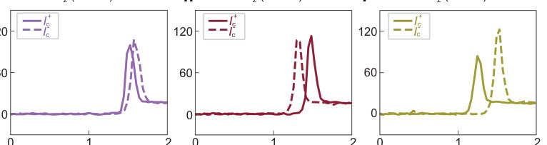
<figcaption class="paper-figure-caption"><b>Fig 1.</b> FIG. 1. Universal Josephson diode effect in a Bi2O2Se Josephson junction (JJ1). a–c, False-colour</figcaption>
</figure>
<figure class="paper-figure-card">
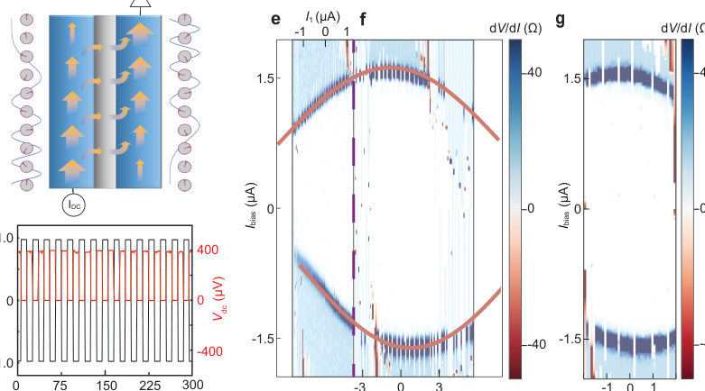
<figcaption class="paper-figure-caption"><b>Fig 2.</b> FIG. 2. Illustration of supercurrent gauge fields (SGF) and magnetic-free quantum interference.</figcaption>
</figure>
<figure class="paper-figure-card">
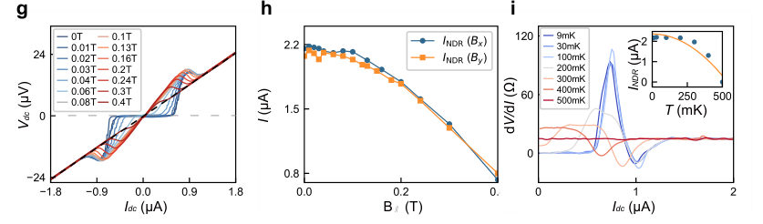
<figcaption class="paper-figure-caption"><b>Fig 3.</b> FIG. 3. Josephson diode effect in a Bernal bilayer graphene (BBG) Josephson junction. a,</figcaption>
</figure>
<figure class="paper-figure-card">
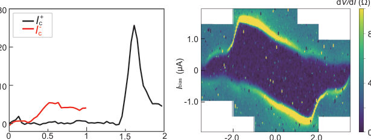
<figcaption class="paper-figure-caption"><b>Fig 4.</b> FIG. 4. Amplified SGF with meandering lead geometry. a, Optical micrograph of JJ2 with mean-</figcaption>
</figure>
<figure class="paper-figure-card">
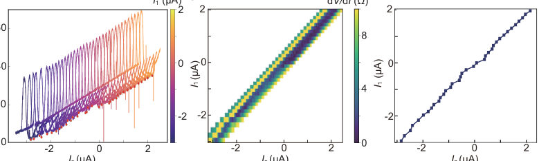
<figcaption class="paper-figure-caption"><b>Fig 5.</b> FIG. 5. Phase-sensitive generation and detection of finite-momentum superconductivity. a–c,</figcaption>
</figure>
</div>

<p><strong>Summary.</strong> This paper introduces the concept of a Supercurrent Gauge Field (SGF) that allows for the generation of magnetic-field-like effects in Josephson junctions using only electric currents. By demonstrating this, the authors show that both quantum interference and the Josephson Diode Effect can be controlled entirely electrically, opening pathways for compact superconducting quantum devices.</p>
<p><strong>Why it may be interesting.</strong> The work provides a powerful analogy between magnetic flux quantization and supercurrent phase winding, offering an all-electric means to probe fundamental superconducting phenomena like momentum transfer and diode behavior without external magnets. This is highly relevant for developing compact quantum devices.</p>
<details>
<summary>Detailed structure</summary>
<p><strong>Main problem.</strong> The research aims to eliminate the historical dependence of Josephson quantum interference and the Josephson Diode Effect (JDE) on external magnetic fields.</p>
<p><strong>Main result.</strong> They demonstrate that a supercurrent gauge field (SGF), generated purely by electric currents, can induce both macroscopic quantum interference patterns and the JDE, establishing an all-electric control mechanism.</p>
<p><strong>Method.</strong> The study combines theoretical modeling based on Ginzburg-Landau theory with detailed transport measurements in planar Josephson junctions using varying current configurations.</p>
<p><strong>Model / system.</strong> The physical platform consists of planar Josephson junctions made from materials like Bi2O2Se and bilayer graphene. The physics is modeled by treating the supercurrent gauge field (SGF) as an effective replacement for the magnetic vector potential A in the superconducting order parameter phase gradient.</p>
<p><strong>Key observables.</strong> Supercurrent Interference Patterns (SIPs), Josephson Diode Effect (JDE) asymmetry ($I_{	ext{C}}^+$ vs $I_{	ext{C}}^-$), and Negative Differential Resistance (NDR).</p>
<p><strong>Important parameters / regimes.</strong> Bias current, control currents ($I_1, I_2$), external magnetic fields ($B_x, B_y$), and temperature.</p>
<p><strong>Assumptions / limitations.</strong> The analysis assumes the physical equivalence between the SGF generated by supercurrents and an externally applied magnetic field. It also models the system using Ginzburg-Landau theory approximations for current density.</p>
<p><strong>Figures summary.</strong> Figures illustrate the emergence of JDE in asymmetric current configurations (field-free), show how control currents can modulate interference patterns mimicking flux sweeping, and detail the dependence of JDE on external fields and temperature.</p>
<p><strong>Paper structure.</strong> The paper progresses by first establishing the problem (B-field reliance), then introducing the SGF concept via theoretical modeling (Ginzburg-Landau/gauge invariance), demonstrating its realization through current injection in asymmetric junctions to show field-free interference, and finally confirming the universal nature of JDE using this electric control.</p>
</details>
<details>
<summary>Abstract</summary>
<p>The Josephson effect, a hallmark of superconducting phase coherence, drives modern quantum technologies. However, Josephson-based quantum interference has hitherto been tethered to magnetic fields, despite phase coherence being a quintessential, intrinsic trait of superconductivity. Moreover, the Josephson diode effect (JDE) is typically viewed as an anomalous phenomenon indicative of broken symmetries in exotic phases of matter. Here, in planar Josephson junctions made with $\mathrm{Bi}_2\mathrm{O}_2\mathrm{Se}$ and bilayer graphene, we demonstrate that the JDE is a missing universal property of the Josephson effect. Simultaneously, we present an all-electric technology that replaces magnetic flux for controlling and measuring supercurrent interference. Central to our approach is a supercurrent gauge field (SGF), generated and amplified through high-kinetic-inductance superconductors and novel device architectures. By establishing the physical equivalence between the SGF and a magnetic field, we eliminate the reliance on external fields in quantum interference and reveal a universal, field-free JDE mechanism with broad implications for detecting broken-symmetry states. Finally, we show that the SGF offers capabilities beyond those of a conventional magnetic field by experimentally demonstrating a magnetic-free, phase-sensitive technique to construct and characterize finite-momentum superconductivity, opening new frontiers for exploring novel phases of matter and superconducting quantum architectures.</p>
</details>
<p><sub><a href="#top">↑ back to top</a></sub></p>

<p><a id="paper-2606.21772"></a></p>
<h3 id="solid-state-transcapacitor-a-new-gain-element-for-logic-memory-and-interconnects"><a href="http://arxiv.org/abs/2606.21772v1">Solid-state transcapacitor, a new gain element for logic, memory and interconnects</a></h3>
<p><strong>Authors:</strong> Amrita Mathuriya, Roza Kotlyar, Neal Reynolds, Rafael Rios, Alan Kalitsov, Peter B. Meisenheimer, James Clarkson, Noriyuki Sato, Tanay Gosavi, Ramamoorthy Ramesh, Dmitri E. Nikonov, Sasikanth Manipatruni<br>
<strong>Type:</strong> theory · <strong>Category:</strong> other · <strong>PDF:</strong> <a href="https://arxiv.org/pdf/2606.21772v1">https://arxiv.org/pdf/2606.21772v1</a><br>
<strong>Analysis basis:</strong> full PDF text, analyzed in chunks
<strong>Topic relevance:</strong> <code>driven-dissipative phase transition</code> <strong>2/5</strong> · <code>spintronics-quantum-optics interface</code> <strong>2/5</strong> · <code>Frenkel-Kontorova</code> <strong>1/5</strong> · <code>analog quantum simulation</code> <strong>1/5</strong> · <code>correlated / nonlocal dissipation</code> <strong>1/5</strong> · <code>correlated cavity matter</code> <strong>1/5</strong> · <code>methods for driven-dissipative</code> <strong>1/5</strong> · <code>non-equilibrium dynamics</code> <strong>1/5</strong> · <code>non-equilibrium universality</code> <strong>1/5</strong></p>
<div class="figure-strip-hint">↔ Scroll figures horizontally</div>
<div class="paper-figures-scroll">
<figure class="paper-figure-card">
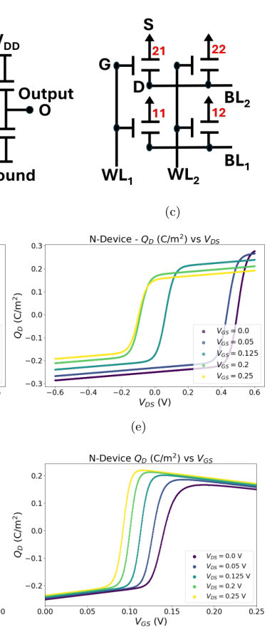
<figcaption class="paper-figure-caption"><b>Fig 1.</b> Fig. 1: (a) Circuit symbols for transcapacitors, (b) An Unloaded inverter with TCAPs, (c) 2x2 memory array circuit with TCAPs, (d-e) QD vs. VDS for P and N devices respectively, (f-g) QD vs VGS transfer plots for P and N devices respectively.</figcaption>
</figure>
<figure class="paper-figure-card">
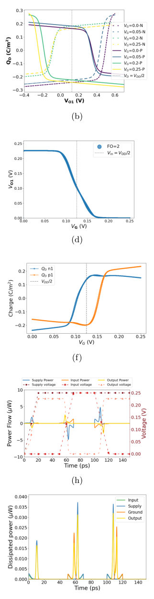
<figcaption class="paper-figure-caption"><b>Fig 2.</b> Fig. 2: Comparison of the operation characteristics of a transistor-based (left column) and transcapacitor-based (right column) inverters. a, b, Load line analysis of the current and charge, respectively, in the pull-up and pull-down devices. c, d, Transfer characteristic, i.e., output vs. input voltage. e, f, Resulting currents or charges/ vs. input voltage. g, h, Power flows vs. time as well as voltages vs. time. i, j, Dissipated power via Joule heating in wires vs. time.</figcaption>
</figure>
<figure class="paper-figure-card">
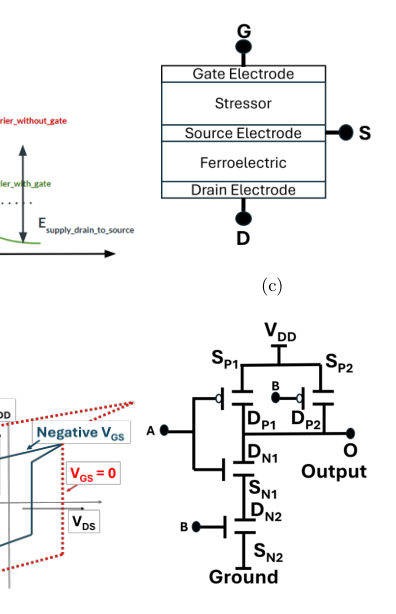
<figcaption class="paper-figure-caption"><b>Fig 3.</b> Fig. 3: Transcapacitor basics. a) symbolic TCAP device with FE material, b) Concept of lowering the energy barrier of an FE with the gate, c) piezo-transcapacitor concept. d-e) hysteresis shrink model as an effect of the gate for N and P device respectively, f) NAND2 gate circuit with TCAP.</figcaption>
</figure>
<figure class="paper-figure-card">
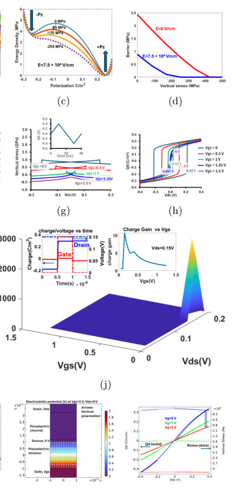
<figcaption class="paper-figure-caption"><b>Fig 4.</b> Fig. 4: Switching mechanism and device operation. a - d: lowering of energy barrier for polarization switching due to electric field and stress two-assist mechanism in ferroelectric channel. a, energy landscapes in unstressed BTO and under compres- sive vertical (along z-direction) elastic stress of -425 MPa. b – c, Energy profiles vs stress under 0 and 7.5×104 V/cm field along z-direction. d, Corresponding energy barrier lowering for switching. e - j: device operation in ferroelectric channel. e – f, Polarization and electrostatic potential vs VGS. g – i, Channel vertical stress, drain charge hysteresis, coercive voltage are modulated by VGS (VDS signal is plotted in inset in g). Charge...</figcaption>
</figure>
<figure class="paper-figure-card">
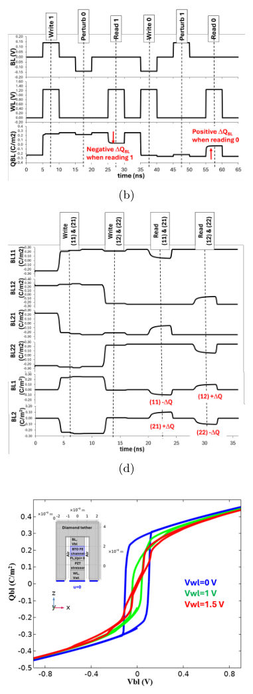
<figcaption class="paper-figure-caption"><b>Fig 5.</b> Fig. 5: Circuit operations results for memory. a-b Read destructive and non- read destructive memory operations for a single bit. c Voltage signals applied to the 2x2 array. d Charge response of the 2x2 array. e Vertical stress distribution at WL = 1.5V and f) a hysteresis vs voltage at BL (Vbl) at various WL voltages (Vwl), for a memory bit 15x15 nm2 area nanopillar design with a tether and side airgaps.</figcaption>
</figure>
</div>

<p><strong>Summary.</strong> This paper proposes using a solid-state transcapacitor (TCAP) as a next-generation logic element to overcome the energy limits of CMOS transistors. By exploiting electro-mechanical coupling in ferroelectric materials, TCAPs can achieve significant reductions in switching energy and delay through capacitive power recycling. The work provides extensive theoretical and simulation evidence supporting this pathway for ultra-low-power computing.</p>
<p><strong>Why it may be interesting.</strong> While focused on classical electronics, the underlying physics—coupling between polarization switching, mechanical stress, and charge modulation—touches upon complex many-body interactions in condensed matter systems that are relevant to understanding emergent quantum phenomena or highly non-linear material responses.</p>
<details>
<summary>Detailed structure</summary>
<p><strong>Main problem.</strong> The primary challenge is overcoming the energy scaling limitations of conventional CMOS transistors for advanced logic, memory, and interconnects in AI systems.</p>
<p><strong>Main result.</strong> A novel solid-state transcapacitor (TCAP) utilizing ferroelectric or piezoelectric materials can achieve significantly lower energy consumption (potentially 100x reduction) by enabling capacitive power recovery rather than relying on dissipative transport current.</p>
<p><strong>Method.</strong> The authors employ a combination of analytical modeling, multi-physics simulations (COMSOL), and circuit simulation (SPICE) to characterize TCAP operation across various coupling mechanisms.</p>
<p><strong>Model / system.</strong> The core system is the TCAP, realized by modulating polarization/capacitance in ferroelectric or piezoelectric channels using an external gate stressor. The physics involves coupling between electric fields, mechanical strain, and polarization dynamics, governed by Landau-Khalatnikov type equations.</p>
<p><strong>Key observables.</strong> Energy consumption ($E_{tr}/E_{tc}$), delay ($    au_{tr}/    au_{tc}$), Charge Gain (CG), Voltage Margin Gain (VMG), and the ON/OFF Ratio for memory applications.</p>
<p><strong>Important parameters / regimes.</strong> Operating voltage scales, polarization density ($P_s$), coercive voltage ($V_c$), and coupling coefficients (e.g., electrostrictive tensors).</p>
<p><strong>Assumptions / limitations.</strong> The models often rely on simplifying assumptions, such as approximating the charge-voltage dependence with a $   anh$ function for simulation convergence.</p>
<p><strong>Figures summary.</strong> Figures compare CMOS vs. TCAP inverter characteristics, show hysteresis shrinkage due to gate voltage, and illustrate multi-physics simulations of stress/polarization evolution in ferroelectric materials.</p>
<p><strong>Paper structure.</strong> The paper systematically introduces the energy crisis in computing, proposes the TCAP concept based on solid-state physics (ferroelectrics/piezoelectrics), derives key performance metrics like Charge Gain and Transcapacitance, and validates these concepts through detailed simulation comparisons against CMOS.</p>
</details>
<details>
<summary>Abstract</summary>
<p>Today's transistors dictate the voltage and charge scales for both logic and memory. While AI systems are recognized to be limited by memory energy, the dominant share of the energy is expended in the intrachip interconnects whose voltage and charge scales are set by transistors. The energy scaling challenges of transistors can be attributed to simultaneously meeting high current density, high current/impedance modulation, and the inability to lower voltages. Hence, a new logic element that lowers the voltage and charge needs is a priority, not only for lowering logic power but also memory access power. Here, we propose a novel 3-terminal logic element for low energy computing, a solid-state transcapacitor (TCAP). A TCAP is a solid state displacement current modulator realized by a gate which controls the charge-voltage relationship of the channel. Unlike transistors, TCAPs eliminate the dissipative transport current, are not bound by the Boltzmann current modulation limit, and operate with displacement currents limited only by the polarization response and contact resistance. Hence, TCAP circuits may simultaneously overcome the voltage, current density, and current modulation limits of CMOS. We describe a solid state TCAP using a piezoelectric transcapacitor in which a gate-controlled stressor modulates the capacitance of a polar channel via electromechanical coupling. This device achieves inversion and gain, essential for logic, and is functionally equivalent to a 1T-1C memory cell, enabling dense memory. Using voltage scaling, capacitive energy recovery, and high polarization densities of polar materials, the logic based on TCAP offers a pathway to 100 fold lower energy consumption with a delay comparable to ultimately scaled CMOS devices. This approach provides a new potential pathway for low-energy computing beyond the limits of transistors using electro-mechanics and multiferroics.</p>
</details>
<p><sub><a href="#top">↑ back to top</a></sub></p>

<p><a id="paper-2606.23142"></a></p>
<h3 id="financial-frequency-combs"><a href="http://arxiv.org/abs/2606.23142v1">Financial Frequency Combs</a></h3>
<p><strong>Authors:</strong> Madhurendra Mishra, Armaan Aryan, Arsh Gogia, Adarsh Ganesan<br>
<strong>Type:</strong> theory · <strong>Category:</strong> other · <strong>PDF:</strong> <a href="https://arxiv.org/pdf/2606.23142v1">https://arxiv.org/pdf/2606.23142v1</a><br>
<strong>Analysis basis:</strong> full PDF text, analyzed in chunks
<strong>Topic relevance:</strong> <code>driven-dissipative phase transition</code> <strong>2/5</strong> · <code>non-equilibrium dynamics</code> <strong>2/5</strong> · <code>Frenkel-Kontorova</code> <strong>1/5</strong> · <code>Keldysh / 2PI / non-Gaussian methods</code> <strong>1/5</strong> · <code>analog quantum simulation</code> <strong>1/5</strong> · <code>correlated / nonlocal dissipation</code> <strong>1/5</strong> · <code>methods for driven-dissipative</code> <strong>1/5</strong> · <code>non-equilibrium universality</code> <strong>1/5</strong></p>
<div class="figure-strip-hint">↔ Scroll figures horizontally</div>
<div class="paper-figures-scroll">
<figure class="paper-figure-card">
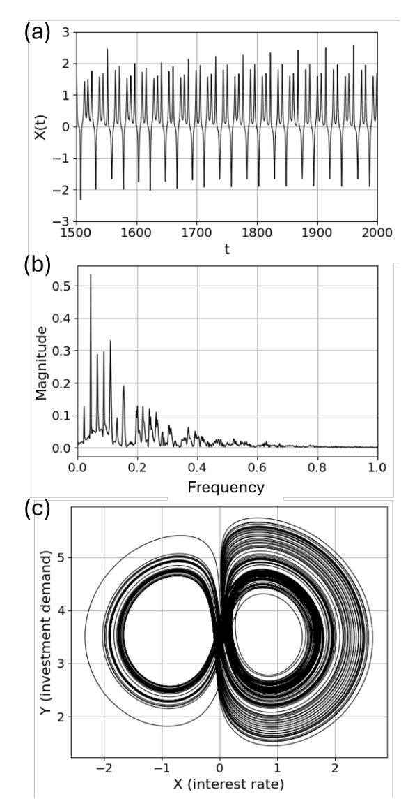
<figcaption class="paper-figure-caption"><b>Fig 1.</b> Figure 1: Baseline dynamics at (q1, q2, q3) = (1.0, 1.0, 0.35), (a, b, c) = (3.0, 0.1, 1.0), (x0, y0, z0) = (2.0, 3.0, 2.0). (a) Steady-state time series of X(t). (b) Normalised FFT magnitude spectrum of X(t). (c) X-Y phase portrait.</figcaption>
</figure>
<figure class="paper-figure-card">
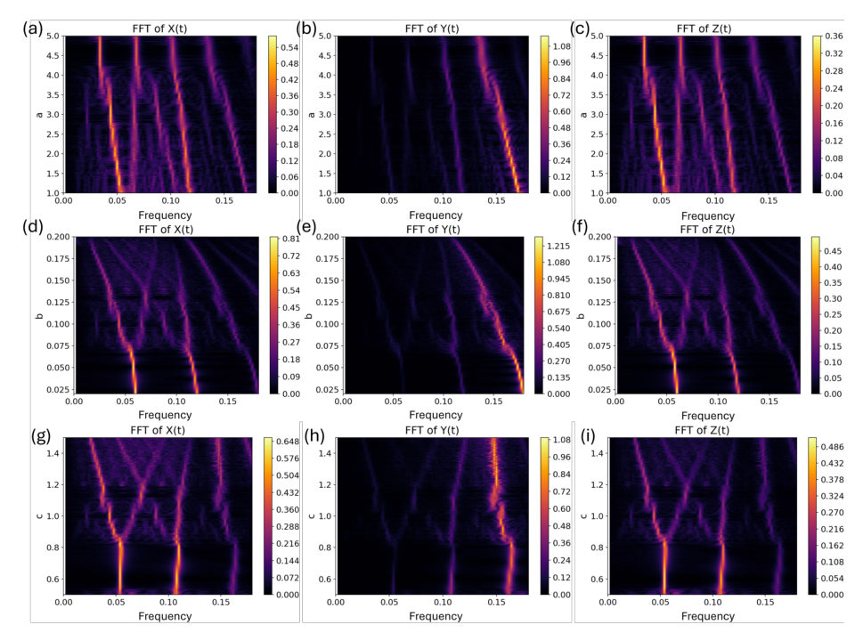
<figcaption class="paper-figure-caption"><b>Fig 2.</b> Figure 2: FFT-magnitude spectrograms of X(t) (left column), Y (t) (centre column), and Z(t) (right column), with (q1, q2, q3) = (1.0, 1.0, 0.35) held fixed. Top row (a)-(c): saving amount a ∈[1.0, 5.0]. Middle row (d)-(f): investment cost b ∈[0.02, 0.20]. Bottom row (g)-(i): demand elasticity c ∈[0.5, 1.5].</figcaption>
</figure>
<figure class="paper-figure-card">
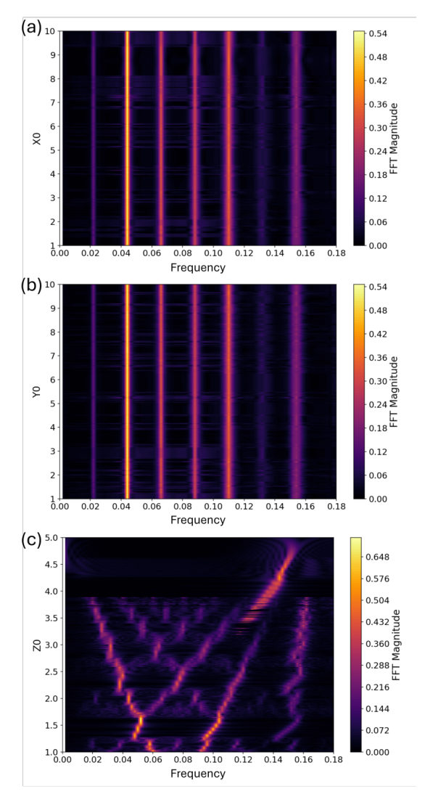
<figcaption class="paper-figure-caption"><b>Fig 3.</b> Figure 3: FFT-magnitude spectrograms of X(t) across initial conditions, with a = 3.0, b = 0.1, c = 1.0, and q1 = q2 = 1.0, q3 = 0.35 held fixed. Panel (a): x0 ∈[1, 10], with y0 = 3.0 and z0 = 2.0 fixed. Panel (b): y0 ∈[1, 10], with x0 = 2.0 and z0 = 2.0 fixed. Panel (c): z0 ∈[1, 5], with x0 = 2.0 and y0 = 3.0 fixed.</figcaption>
</figure>
<figure class="paper-figure-card">
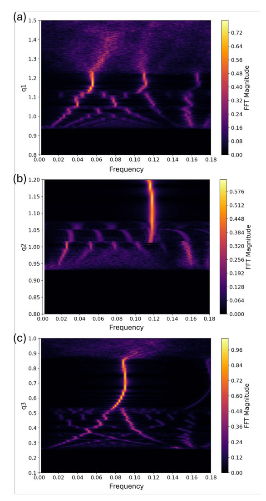
<figcaption class="paper-figure-caption"><b>Fig 4.</b> Figure 4: FFT-magnitude spectrograms of X(t) across fractional orders, with a = 3.0, b = 0.1, and c = 1.0 held fixed throughout. Panel (a): q1 ∈[0.5, 1.5] (displayed from 0.8 to 1.5), with q2 = 1.0 and q3 = 0.3 fixed. Panel (b): q2 ∈[0.5, 1.5] (displayed from 0.80 to 1.20), with q1 = 1.0 and q3 = 0.3 fixed. Panel (c): q3 ∈[0.1, 1.0], with q1 = q2 = 1.0 fixed.</figcaption>
</figure>
</div>

<p><strong>Summary.</strong> This work applies nonlinear dynamics and fractional calculus to a financial model to test if long-memory economic fluctuations exhibit a predictable, discrete spectral fingerprint called a frequency comb. The results show that such a deterministic structure emerges only when specific parameters and fractional exponents fall within narrow, stable regimes. This suggests a profound link between memory effects in finance and underlying harmonic organization.</p>
<p><strong>Why it may be interesting.</strong> While not directly quantum, the mathematical framework of using fractional calculus and spectral analysis to characterize deterministic structure in complex systems mirrors techniques used in open quantum systems modeling or characterizing non-Markovian dynamics where long-term memory effects are crucial.</p>
<details>
<summary>Detailed structure</summary>
<p><strong>Main problem.</strong> The study investigates whether long-range memory financial systems can exhibit a deterministic, discrete spectral fingerprint analogous to a frequency comb.</p>
<p><strong>Main result.</strong> Under specific parameter and fractional-order conditions, the system's steady-state power spectrum organizes into a clear, equidistant frequency comb structure. This suggests that complex economic cycles might possess an underlying deterministic periodicity rather than being purely stochastic.</p>
<p><strong>Method.</strong> The authors employed numerical integration of a nonlinear, fractional-order financial model followed by Fast Fourier Transform (FFT) spectral analysis to diagnose the presence and stability of the comb.</p>
<p><strong>Model / system.</strong> The system is based on a three-dimensional nonlinear financial model involving interest rate ($x$), investment demand ($y$), and price index ($z$). This model is generalized using Caputo fractional derivatives ($ ext{D}^{q_i}$) to incorporate long-range memory effects into the dynamics.</p>
<p><strong>Key observables.</strong> The primary observable is the power spectrum, specifically looking for discrete, equally spaced spectral lines (the frequency comb). Other observables include Lyapunov exponents and phase portrait geometry.</p>
<p><strong>Important parameters / regimes.</strong> Structural parameters include saving amount ($a$), investment cost ($b$), and demand elasticity ($c$). Crucially, the fractional orders ($q_1, q_2, q_3$) dictate whether the comb appears or if the system transitions to chaos.</p>
<p><strong>Assumptions / limitations.</strong> The analysis assumes that the observed spectral structure is governed by a single bounded, two-lobed motion in the phase space. The use of the Caputo fractional derivative formulation is central to the model.</p>
<p><strong>Figures summary.</strong> Figures illustrate time series, FFT spectra showing the comb under varying parameters ($a, b, c$), and how the comb's existence depends on the specific ranges of the fractional orders ($q_1, q_2, q_3$).</p>
<p><strong>Paper structure.</strong> The paper proceeds by defining the nonlinear financial model, generalizing it to fractional order dynamics, performing extensive parameter sweeps across structural constants ($a, b, c$) and memory exponents ($q_i$), and analyzing the resulting spectral signatures.</p>
</details>
<details>
<summary>Abstract</summary>
<p>Frequency combs are discrete, equally spaced, phase-coherent spectral lines that emerge from nonlinear mode coupling in physical systems. We show that the incommensurate fractional-order financial model of Huang, Li, Ma, and Chen, whose Caputo derivatives encode macroeconomic long-range memory, generates an analogous structure in its steady-state spectrum. The comb appears only over specific values and ranges of the saving amount $a$, the investment cost $b$, and the demand elasticity $c$, outside which the spectral lines lose their equal spacing. It persists across extended parameter regimes and stays invariant to perturbations in the initial interest rate $x_0$ and investment demand $y_0$, while distinct spectral regimes appear at different initial price levels $z_0$. The comb is generated only when the fractional-order exponents $q_1$, $q_2$, and $q_3$ associated with interest rate, investment demand, and price index are above the critical threshold values. At even higher values of these exponents, the frequency comb transitions into chaos. These findings show that the long-run cyclic structure of a memory-bearing financial economy organises into a discrete, deterministic spectral fingerprint rather than a stochastic continuum.</p>
</details>
<p><sub><a href="#top">↑ back to top</a></sub></p>

<p><a id="paper-2606.23095"></a></p>
<h3 id="fingerprints-of-an-imbert-fedorov-like-effect-in-the-tunneling-transmission-of-rarita-schwinger-semi-metals"><a href="http://arxiv.org/abs/2606.23095v1">Fingerprints of an Imbert-Fedorov-like effect in the tunneling transmission of Rarita-Schwinger semi-metals</a></h3>
<p><strong>Authors:</strong> Otman Bouladiane, Ahmed Jellal, Hocine Bahlouli, A. Al Luhaibi, Michael Vogl<br>
<strong>Type:</strong> theory · <strong>Category:</strong> other · <strong>PDF:</strong> <a href="https://arxiv.org/pdf/2606.23095v1">https://arxiv.org/pdf/2606.23095v1</a><br>
<strong>Analysis basis:</strong> full PDF text, analyzed in chunks
<strong>Topic relevance:</strong> <code>non-equilibrium dynamics</code> <strong>2/5</strong> · <code>spintronics-quantum-optics interface</code> <strong>2/5</strong> · <code>Keldysh / 2PI / non-Gaussian methods</code> <strong>1/5</strong> · <code>Kondo &amp; dissipative impurity</code> <strong>1/5</strong> · <code>correlated / nonlocal dissipation</code> <strong>1/5</strong> · <code>driven-dissipative phase transition</code> <strong>1/5</strong> · <code>methods for driven-dissipative</code> <strong>1/5</strong> · <code>non-equilibrium universality</code> <strong>1/5</strong></p>
<div class="figure-strip-hint">↔ Scroll figures horizontally</div>
<div class="paper-figures-scroll">
<figure class="paper-figure-card">
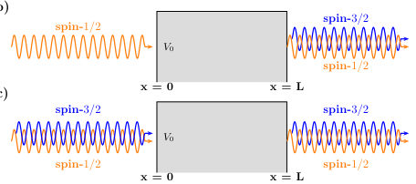
<figcaption class="paper-figure-caption"><b>Fig 1.</b> FIG. 2. Tunneling setup for three choices of incoming states: (a) a single incoming channel with spin projection 3 2, (b) a single incoming channel with spin projection 1 2, and (c) a coherent mixture of both channels. The Rarita-Schwinger fermion is incident on a square barrier of height V0 and width L.</figcaption>
</figure>
<figure class="paper-figure-card">
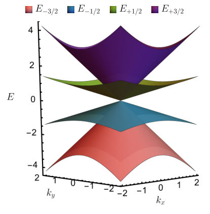
<figcaption class="paper-figure-caption"><b>Fig 2.</b> FIG. 1. Energy dispersion of the spin-3/2 Rarita–Schwinger semi-metals as a function of momentum (kx, ky). The four bands E±3/2 and E±1/2 form Dirac-like cones centered at k = 0, with distinct slopes reflecting their different group velocities.</figcaption>
</figure>
<figure class="paper-figure-card">
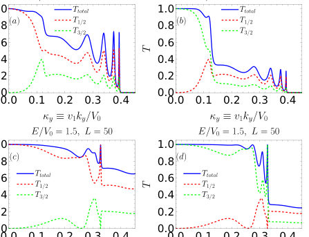
<figcaption class="paper-figure-caption"><b>Fig 3.</b> FIG. 3. Transmission probabilities of spin 1/2, 3/2 and the to- tal for independent incoming channels. The upper (a,b) pan- els show the tunneling regime E/V0 = 0.8, while the lower (c,d) panels show the over-the-barrier regime E/V0 = 1.5. The left panels (a,c) correspond to incoming spin projection m = 1/2 with δ1/2 = 1 and δ3/2 = 0, while the right (b,d) panels correspond to incoming spin projection m = 3/2 with δ3/2 = 1 and δ1/2 = 0. The horizontal axis is the dimen- sionless conserved transverse momentum κy = v1ky/V0. We included only positive κy because negative κy corresponds to a mirror image.</figcaption>
</figure>
<figure class="paper-figure-card">
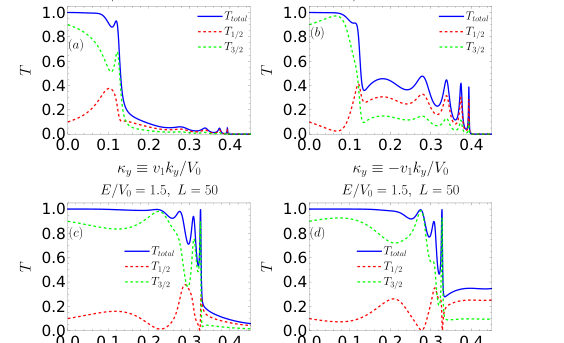
<figcaption class="paper-figure-caption"><b>Fig 4.</b> FIG. 4. Transmission for a coherent equal-amplitude super- position with δ1/2 = δ3/2 = 1. The top row corresponds to the tunneling regime E/V0 = 0.8, and the bottom row corre- sponds to the over-barrier regime E/V0 = 1.5. The left and right columns in the figure correspond to T(κy) and T(−κy), respectively.</figcaption>
</figure>
<figure class="paper-figure-card">
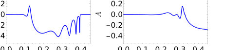
<figcaption class="paper-figure-caption"><b>Fig 5.</b> FIG. 5. The asymmetry function as represented in Eq. (27) for a coherent equal-amplitude superposition with δ1/2 = δ3/2 = 1. The left column corresponds to the tunneling regime E/V0 = 0.8, and the right column to the over-barrier regime E/V0 = 1.5</figcaption>
</figure>
</div>

<p><strong>Summary.</strong> The paper investigates tunneling through a barrier in a Rarita-Schwinger semi-metal, which possesses multiple spin sectors. By comparing single-sector transmission to coherent mixtures, the authors demonstrate that directional asymmetry can emerge even if the underlying band structure is isotropic. This effect is attributed entirely to phase differences between internal wave components, establishing an analogy to the Imbert-Fedorov effect in quantum transport.</p>
<p><strong>Why it may be interesting.</strong> This work provides a concrete theoretical mechanism showing how phase accumulation in internal degrees of freedom (spin components) can induce measurable transport asymmetries, which is relevant for understanding quantum interfaces and non-Hermitian effects in condensed matter systems.</p>
<details>
<summary>Detailed structure</summary>
<p><strong>Main problem.</strong> The study aims to identify fingerprints of an Imbert-Fedorov-like effect in the quantum tunneling transmission through a barrier within a Rarita-Schwinger semi-metal.</p>
<p><strong>Main result.</strong> Directional asymmetry in tunneling ($T(k_y) 
eq T(-k_y)$) can occur even in idealized, isotropic multiband systems, arising purely from phase differences between internal wave components rather than explicit band anisotropy.</p>
<p><strong>Method.</strong> The authors analytically derived transmission amplitudes by solving the scattering problem for a multi-component spinor wavefunction across a square barrier using mode-matching techniques.</p>
<p><strong>Model / system.</strong> The system is a Rarita-Schwinger semi-metal, which supports two distinct propagating spin sectors ($m=1/2$ and $m=3/2$) forming Dirac-like cones. Tunneling occurs through an idealized square potential barrier.</p>
<p><strong>Key observables.</strong> Tunneling transmission probability $T(k_y)$ and the asymmetry function $A(k_y) = T(k_y) - T(-k_y)$.</p>
<p><strong>Important parameters / regimes.</strong> The spin projections ($m=1/2, m=3/2$), the barrier height ($V_0$), and the incident transverse momentum ($\kappa_y$).</p>
<p><strong>Assumptions / limitations.</strong> The analysis is restricted to a rotationally symmetric case for analytical tractability; the effect is shown to persist even when the underlying Hamiltonian is mirror symmetric.</p>
<p><strong>Figures summary.</strong> Figures illustrate energy dispersion cones, compare transmission for single-sector vs. coherent mixtures, and plot the asymmetry function $A(\kappa_y)$ showing non-zero values away from normal incidence.</p>
<p><strong>Paper structure.</strong> The paper establishes the multichannel nature of the system, calculates transmission amplitudes for both single-channel and coherent mixed-incidence cases, and then rigorously demonstrates that the directional asymmetry arises solely from interference terms involving different scattering/propagation phases between the spin sectors.</p>
</details>
<details>
<summary>Abstract</summary>
<p>We study tunneling through a square barrier in a rotationally symmetric Rarita-Schwinger semi-metal and identify fingerprints of an Imbert-Fedorov-like effect in the tunneling transmission. The problem is intrinsically multichannel at all energies because there exist two propagating sectors with spin projections $m=1/2$ and $m=3/2$. We derive the transmission amplitudes analytically and compare the single-channel and coherent mixed-incidence cases in the two channels. Interestingly, we observe that tunneling at high energy shows a bias towards scattering into spin projection $3/2$ contributions. For single-channel injection, we find that the transmission remains symmetric under a mirror transformation of the incident angle. In contrast, for the coherent superposition, we find a directional asymmetry in the transmission probability $T(k_y)\neq T(-k_y)$. Importantly, this effect does not originate from an anisotropy of the dispersion. Instead, it arises from the phase structure of the multicomponent scattering states. The two spin projection sectors exhibit different scattering and barrier-propagation phases, which enter as interference terms when both channels appear as a coherent superposition. This interference term is identified as the cause of the broken mirror symmetry. We therefore discover an analog of the Imbert-Fedorov effect, at the level of interface-induced phase differences between internal wave components. Our result demonstrates that asymmetric tunneling can already occur in transport experiments, even in an idealized, isotropic multiband system, and should therefore not be automatically attributed solely to explicit band anisotropy.</p>
</details>
<p><sub><a href="#top">↑ back to top</a></sub></p>

<p><a id="paper-2606.22677"></a></p>
<h3 id="selectivity-in-tip-induced-skeletal-editing-via-heteroatom-substitution"><a href="http://arxiv.org/abs/2606.22677v1">Selectivity in tip-induced skeletal editing via heteroatom substitution</a></h3>
<p><strong>Authors:</strong> Shantanu Mishra, Rasmus Svensson, Valentina Malave, Florian Albrecht, Manuel Vilas-Varela, Henrik Grönbeck, Leo Gross, Diego Peña<br>
<strong>Type:</strong> both · <strong>Category:</strong> other · <strong>PDF:</strong> <a href="https://arxiv.org/pdf/2606.22677v1">https://arxiv.org/pdf/2606.22677v1</a><br>
<strong>Analysis basis:</strong> full PDF text, analyzed in chunks
<strong>Topic relevance:</strong> <code>measurement-induced transitions</code> <strong>2/5</strong> · <code>non-equilibrium dynamics</code> <strong>2/5</strong> · <code>quantum measurements</code> <strong>2/5</strong> · <code>driven-dissipative phase transition</code> <strong>1/5</strong> · <code>methods for driven-dissipative</code> <strong>1/5</strong> · <code>non-equilibrium universality</code> <strong>1/5</strong></p>
<div class="figure-strip-hint">↔ Scroll figures horizontally</div>
<div class="paper-figures-scroll">
<figure class="paper-figure-card">
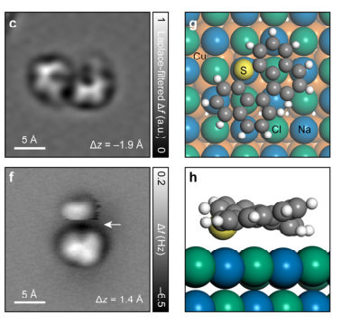
<figcaption class="paper-figure-caption"><b>Fig 1.</b> Figure 1. STM and AFM imaging of DNT. (a) STM image of a DNT molecule adsorbed on Cu(111). (b, c) AFM image (b) and the corresponding Laplace-filtered image (c) of the DNT molecule in (a). Δz denotes the tip-height offset, with positive (negative) values indicating tip retraction (approach) from the set-point, Δf denotes frequency shift, and a.u. denotes arbitrary units. (d) STM image of a DNT molecule adsorbed on bilayer NaCl. (e, f) AFM images of the DNT molecule in (d) taken at two different tip heights. The circle in (e) highlights streaks likely resulting from conformational switching of the molecule. The arrows in (b, f) indicate the locations of the sulfur atom. (g, h) Top and side...</figcaption>
</figure>
<figure class="paper-figure-card">
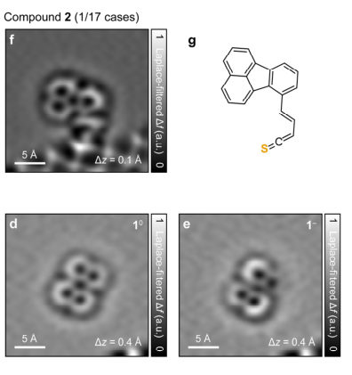
<figcaption class="paper-figure-caption"><b>Fig 2.</b> Figure 2. Structural and electronic characterization of reaction products on NaCl. (a) Laplace-filtered AFM image of a perylene molecule adsorbed at the step edge of a third-layer NaCl island. The bright and dark features in the third-layer NaCl island correspond to Cl− and Na+ ions, respectively. (b) STM image of the perylene molecule in (a) showing its LUMO density (V = 2.0 V, I = 0.3 pA). (c) Constant-height I(V) spectra acquired on 1 (right), revealing charge-state bistability. Open feedback parameters: V = –1.2 V, I = 0.3 pA; forward (backward) sweeps: –1.2 V to 1.2 V (1.2 V to –1.2 V). The molecule is in the neutral (anionic) state for V &lt; –0.65 V (V &gt; 0.68 V). The hysteretic behavior...</figcaption>
</figure>
<figure class="paper-figure-card">
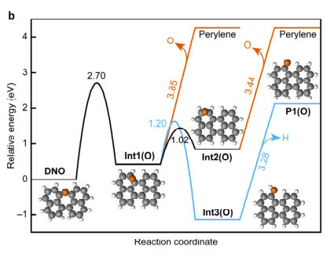
<figcaption class="paper-figure-caption"><b>Fig 3.</b> Figure 3. Gas-phase potential energy landscapes of skeletal editing of DNT (a) and DNO (b) obtained by DFT calculations. The numbers denote absolute gas-phase activation energies (in eV) of each reaction. For Int1 and Int2 → perylene and Int3 → P1, energy differences coincide with activation energies. Also shown are the optimized gas-phase molecular geometries of precursors, intermediates, and products. Sulfur and oxygen atoms are colored yellow and orange, respectively. The calculations were performed assuming a neutral charge state of the reactant, intermediates, and products.</figcaption>
</figure>
</div>

<p><strong>Summary.</strong> This work demonstrates that by replacing an oxygen heteroatom with sulfur in a heterocyclic molecule, the type of skeletal editing induced by tip-voltage pulses can be selectively controlled. Using STM/AFM and DFT, the authors show that sulfur promotes clean sulfur deletion to form perylene, offering a powerful design principle for molecular synthesis.</p>
<p><strong>Why it may be interesting.</strong> While focused on molecular materials science, the use of controlled voltage pulses to induce specific bond cleavages and structural transformations at the single-molecule level mirrors concepts in controlling quantum states or chemical reactions using external fields.</p>
<details>
<summary>Detailed structure</summary>
<p><strong>Main problem.</strong> The study investigates whether selective skeletal editing of heterocyclic cores can be achieved by judiciously choosing the heteroatom, comparing oxygen-containing versus sulfur-containing rings.</p>
<p><strong>Main result.</strong> Tip-induced reactions on sulfur-containing analogues ($    ext{DNT}$) predominantly result in facile sulfur deletion to form perylene, contrasting with oxygen analogues ($    ext{DNO}$), which show mixed rearrangement and deletion products.</p>
<p><strong>Method.</strong> The research combines single-molecule scanning probe microscopy (STM/AFM) experiments with detailed Density Functional Theory (DFT) calculations of potential energy landscapes.</p>
<p><strong>Model / system.</strong> The system involves dinaphtho[1,8-bc:1',8'-ef]oxepine ($    ext{DNO}$) and its sulfur analogue ($    ext{DNT}$), adsorbed on surfaces like $ ext{Cu}(111)$ or $  ext{NaCl}$. The process is driven by applying voltage pulses from the microscope tip.</p>
<p><strong>Key observables.</strong> Reaction products (e.g., perylene), reaction selectivity (heteroatom deletion vs. ring-contraction rearrangement), and calculated activation energies ($\Delta E^\ddagger$).</p>
<p><strong>Important parameters / regimes.</strong> Applied voltages ($4.7–5.0 	ext{ V}$), substrate types ($ ext{Cu}(111)$, $    ext{NaCl}$), and the heteroatom identity (O vs. S).</p>
<p><strong>Assumptions / limitations.</strong> DFT calculations often assume specific charge states for reactants, intermediates, and products; experimental observations are limited by tip-induced conditions.</p>
<p><strong>Figures summary.</strong> Figures show STM/AFM images of adsorbed molecules ($   ext{DNT}$), evidence of product formation (perylene), and DFT potential energy diagrams comparing reaction barriers for $   ext{O}$ vs. $   ext{S}$ elimination.</p>
<p><strong>Paper structure.</strong> The paper progresses from demonstrating initial tip-induced chemistry on oxygen analogues to systematically testing the role of heteroatom substitution by analyzing sulfur analogues, supported by comparative computational modeling.</p>
</details>
<details>
<summary>Abstract</summary>
<p>Skeletal editing enables precise structural modifications of molecules at late stages of a synthetic sequence, with applications in drug discovery and materials science. We recently demonstrated skeletal editing on the single-molecule scale. Voltage pulses applied by the tip of a scanning probe microscope to an oxygen-containing seven-membered heterocycle led to both oxygen deletion and ring-contraction rearrangement reactions. An open question is whether selective skeletal editing of a heterocyclic core can be achieved by an appropriate choice of the heteroatom. Here, we show that tip-induced reactions of an analogous sulfur-containing seven-membered ring results in sulfur deletion in virtually all cases. Our results demonstrate that the combination of tip-induced chemistry and heteroatom selection in the molecular design is a powerful strategy for single-molecule skeletal editing, with the potential to enable diverse structural transformations of heterocyclic frameworks.</p>
</details>
<p><sub><a href="#top">↑ back to top</a></sub></p>

<p><a id="paper-2606.22132"></a></p>
<h3 id="thermodynamic-stability-and-structural-transitions-in-virus-host-networks"><a href="http://arxiv.org/abs/2606.22132v1">Thermodynamic stability and structural transitions in virus-host networks</a></h3>
<p><strong>Authors:</strong> A. Rovenchak, M. Husiev<br>
<strong>Type:</strong> theory · <strong>Category:</strong> statistical mechanics · <strong>PDF:</strong> <a href="https://arxiv.org/pdf/2606.22132v1">https://arxiv.org/pdf/2606.22132v1</a><br>
<strong>Analysis basis:</strong> full PDF text, analyzed in chunks
<strong>Topic relevance:</strong> <code>driven-dissipative phase transition</code> <strong>2/5</strong> · <code>Keldysh / 2PI / non-Gaussian methods</code> <strong>1/5</strong> · <code>analog quantum simulation</code> <strong>1/5</strong> · <code>correlated / nonlocal dissipation</code> <strong>1/5</strong> · <code>entanglement &amp; information structure</code> <strong>1/5</strong> · <code>methods for driven-dissipative</code> <strong>1/5</strong> · <code>non-equilibrium dynamics</code> <strong>1/5</strong> · <code>non-equilibrium universality</code> <strong>1/5</strong></p>
<div class="figure-strip-hint">↔ Scroll figures horizontally</div>
<div class="paper-figures-scroll">
<figure class="paper-figure-card">
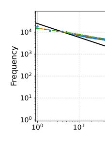
<figcaption class="paper-figure-caption"><b>Fig 1.</b> Figure 1. (Colour online) Rank–frequency distribution for all interactions (all scores).</figcaption>
</figure>
<figure class="paper-figure-card">
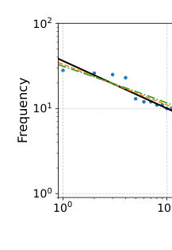
<figcaption class="paper-figure-caption"><b>Fig 2.</b> Figure 2. (Colour online) Rank–frequency distribution for high-confidence human biomolecule interac- tions (Score ⩾0.95).</figcaption>
</figure>
<figure class="paper-figure-card">
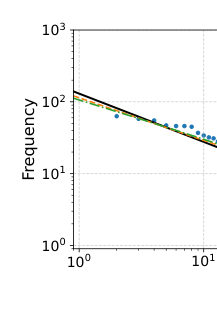
<figcaption class="paper-figure-caption"><b>Fig 3.</b> Figure 3. (Colour online) Rank–frequency distribution for high-confidence human biomolecule interac- tions (Score ⩾0.70).</figcaption>
</figure>
<figure class="paper-figure-card">
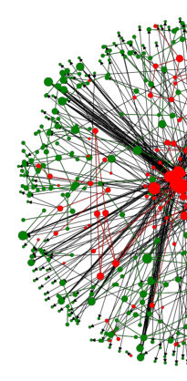
<figcaption class="paper-figure-caption"><b>Fig 4.</b> Figure 4. (Colour online) Virus–host network for Homo sapiens.</figcaption>
</figure>
<figure class="paper-figure-card">
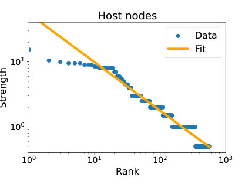
<figcaption class="paper-figure-caption"><b>Fig 5.</b> Figure 5. (Colour online) Node strength distribution for the virus–host network of Homo sapiens. The plot demonstrates a power-law behavior (2.5). The distribution is shown separately for virus-associated nodes and host-associated nodes. The power-law exponent 𝛾is estimated after discarding the lowest 20% of values.</figcaption>
</figure>
</div>

<p><strong>Summary.</strong> This paper applies advanced statistical mechanics tools to model virus-host interaction networks. By analyzing how network properties change upon node removal, the authors identify 'transition-like' behavior using thermodynamic quantities like heat capacity. This demonstrates that a rigorous thermodynamic framework can be successfully applied to predict structural stability and dynamic changes in complex biological systems.</p>
<p><strong>Why it may be interesting.</strong> While applied to biology, the methodology—using concepts like heat capacity and susceptibility derived from graph spectra to locate phase transitions or structural reorganization points—is directly analogous to techniques used in studying quantum many-body systems and complex energy landscapes.</p>
<details>
<summary>Detailed structure</summary>
<p><strong>Main problem.</strong> The study aims to understand how virus-host interactions affect network stability by analyzing structural transitions using thermodynamic concepts.</p>
<p><strong>Main result.</strong> The analysis reveals transition-like behavior in spectral thermodynamic functions (like heat capacity and susceptibility) when nodes are removed, suggesting a thermodynamic framework is useful for studying these complex biological networks.</p>
<p><strong>Method.</strong> The authors employ statistical physics tools, calculating network parameters like Graph Temperature, Magnetization, Susceptibility, and Heat Capacity derived from the adjacency spectrum.</p>
<p><strong>Model / system.</strong> The system modeled is a virus-host interaction network (for species like <em>H. sapiens</em>), represented as a weighted, directed graph with connections between host biomolecules and viruses.</p>
<p><strong>Key observables.</strong> Network Density (D), Assortativity Coefficient, Graph Temperature (T), Magnetization (M), Susceptibility ($\chi$), and Heat Capacity ($C$).</p>
<p><strong>Important parameters / regimes.</strong> Node removal strategy (targeted vs. random); confidence scores for interactions; spectral eigenvalues ($\lambda_i$).</p>
<p><strong>Assumptions / limitations.</strong> The analysis assumes that structural changes in the network can be mapped onto thermodynamic concepts, such as using fixed spin assignments ($s_j$) for magnetization calculations.</p>
<p><strong>Figures summary.</strong> Figures illustrate the evolution of metrics like density and susceptibility under targeted vs. random node removal; heat capacity curves show multiple peaks indicating different spectral scales within the network structure.</p>
<p><strong>Paper structure.</strong> The paper progresses from characterizing rank-frequency distributions (Zipf's law fitting) to analyzing structural robustness via node removal, culminating in a full thermodynamic analysis using spectral properties to pinpoint critical transition points.</p>
</details>
<details>
<summary>Abstract</summary>
<p>Understanding virus-host interactions is crucial for predicting the stability of networks under various perturbations. In this study, we present an analysis of virus-related networks for several organisms (Homo sapiens, Mus musculus, Gallus gallus), encompassing directed and weighted connections. We compute a range of network parameters, including topological characteristics and thermodynamic quantities derived from adjacency spectra, to gain insights into the structural robustness and dynamic behavior of the networks. To assess stability, we model two distinct node removal scenarios: targeted elimination of the most influential nodes and random removal. Our findings reveal transition-like behavior in spectral thermodynamic functions and characteristic changes in structural measures, contributing to evaluating the potential of a thermodynamic framework for studying virus-host networks and advancing a deeper understanding of their dynamics.</p>
</details>
<p><sub><a href="#top">↑ back to top</a></sub></p>

<p><a id="paper-2606.21860"></a></p>
<h3 id="antiferromagnetic-pseudospintronics-without-spin-splitting"><a href="http://arxiv.org/abs/2606.21860v1">Antiferromagnetic pseudospintronics without spin splitting</a></h3>
<p><strong>Authors:</strong> Shu-Hui Zhang, Shu-Qi Liu, Dan-Yang Han, Zhan Kong, Ding-Fu Shao, Wen Yang, Kai Chang<br>
<strong>Type:</strong> theory · <strong>Category:</strong> other · <strong>PDF:</strong> <a href="https://arxiv.org/pdf/2606.21860v1">https://arxiv.org/pdf/2606.21860v1</a><br>
<strong>Analysis basis:</strong> full PDF text, analyzed in chunks
<strong>Topic relevance:</strong> <code>analog quantum simulation</code> <strong>2/5</strong> · <code>driven-dissipative phase transition</code> <strong>2/5</strong> · <code>Keldysh / 2PI / non-Gaussian methods</code> <strong>1/5</strong> · <code>methods for driven-dissipative</code> <strong>1/5</strong> · <code>non-equilibrium dynamics</code> <strong>1/5</strong> · <code>spintronics-quantum-optics interface</code> <strong>1/5</strong></p>
<div class="figure-strip-hint">↔ Scroll figures horizontally</div>
<div class="paper-figures-scroll">
<figure class="paper-figure-card">
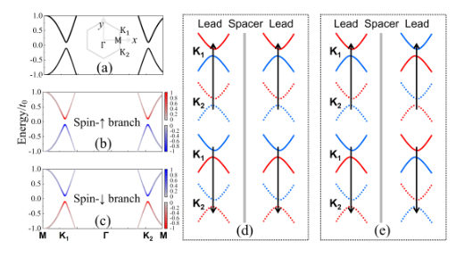
<figcaption class="paper-figure-caption"><b>Fig 1.</b> FIG. 1. (a) The spin-degenerate band structure of electrons in the honeycomb AFM. The inset shows the high-symmetry points in the Brillouin zone. (b, c) Two spin branches are associated with the pseu- dospin polarization ¯σz λs (color scale), which are opposite. (d, e) The band matching of AFM-based tunneling junctions with the junction interfaces along the zigzag directions. The N´eel vectors in the two leads are identical/opposite in (d)/(e).</figcaption>
</figure>
<figure class="paper-figure-card">
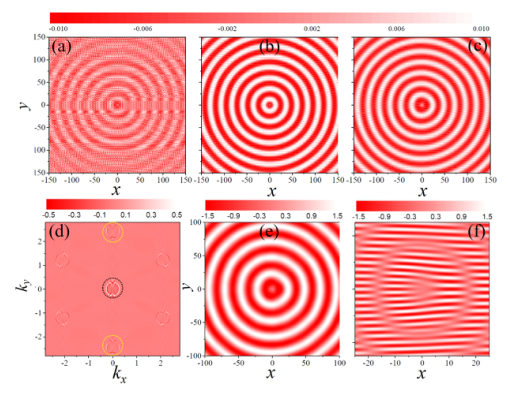
<figcaption class="paper-figure-caption"><b>Fig 2.</b> FIG. 2. (a) FOs induced by the impurity at the sublattice A with r = 0. (b) and (c) for the sublattice-resolved FOs at A and B, respec- tively. (d) Fourier transform of the sublattice-resolved FOs at B. (e) FOs contributed by the intravalley scattering rδρintra B ×102 through the inverse Fourier transform by considering the momentum region lim- ited by the black circle in (d). (f) FOs contributed by the intervalley scattering rδρinter B ×103 through the inverse Fourier transform by con- sidering the momentum region limited by yellow circles in (d). Here, ε = 0.2t0, ∆0 = 0.03t0, and the impurity strength Vimp = t0.</figcaption>
</figure>
<figure class="paper-figure-card">
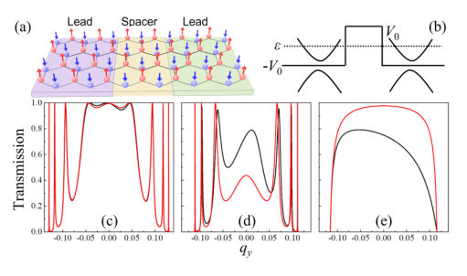
<figcaption class="paper-figure-caption"><b>Fig 3.</b> FIG. 4. An all-in-one junction based on the honeycomb AFM (a) and the corresponding potential distribution (b). (c, d, e) The change of transmission induced by the inversion of the Neel vector. (c) Λ3 = ±0.05V0 for the red solid line and the black dotted line, respectively, and w = 100a0. (d) Λ3 = ±0.5V0 for the red solid line and the black dotted line, respectively, and w = 100a0. (e) Λ3 = ±0.5V0 for the red solid line and the black dotted line, respectively, and w = a0. Here, the spin-up branch of K1 valley is considered, ε = 0, V0 = 0.2t0, and Λ1 = Λ2 = 0.5V0.</figcaption>
</figure>
<figure class="paper-figure-card">
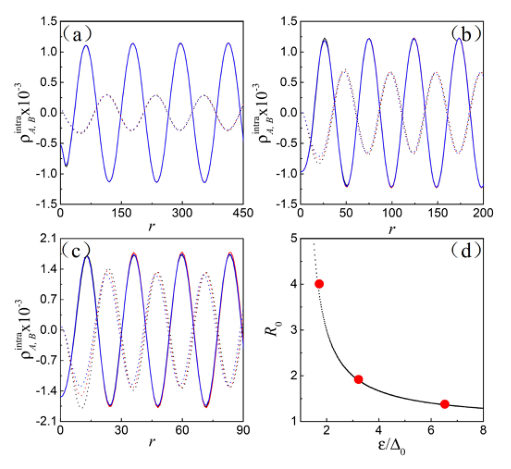
<figcaption class="paper-figure-caption"><b>Fig 4.</b> FIG. 3. δρintra A,B and the amplitude ratio R = δρintra A /δρintra B from the inverse Fourier transform. (a) ε = 0.05t0. (b) ε = 0.1t0. (c) ε = 0.2t0. (d) R as the function of ε/∆0. In (a, b, c), three directions θr = 0 (black), π/6 (red), π/3 (blue) are considered, and the solid (dotted) lines are for δρintra A (δρintra B ). Here, ∆0 = 0.03t0.</figcaption>
</figure>
<figure class="paper-figure-card">
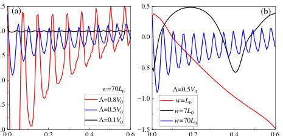
<figcaption class="paper-figure-caption"><b>Fig 5.</b> FIG. 5. The pseudomagnetoresistance ratio as a function of junction potential V0. Different gap values Λ and junction widths w are con- sidered. Here, L0 = 1.5a0.</figcaption>
</figure>
</div>

<p><strong>Summary.</strong> This work pioneers AFM pseudospintronics by utilizing the sublattice degree of freedom in antiferromagnets that lack conventional spin splitting. The key mechanism identified is a partial pseudospin–spin coupling, which allows for switching polarization by reversing the Néel vector. This leads to measurable effects like NV-controlled tunneling and large nonvolatile magnetoresistance.</p>
<p><strong>Why it may be interesting.</strong> While focused on condensed matter magnetism, the use of symmetry breaking (NV reversal) to control electronic transport properties via internal degrees of freedom (sublattice pseudospin) is relevant to open quantum systems where multiple coupled order parameters govern dynamics.</p>
<details>
<summary>Detailed structure</summary>
<p><strong>Main problem.</strong> To develop a new paradigm for spintronics, termed AFM pseudospintronics, that operates in antiferromagnets (AFMs) without relying on the conventional requirement of spin splitting.</p>
<p><strong>Main result.</strong> The study demonstrates that sublattice degrees of freedom can be exploited via partial pseudospin–spin coupling to achieve Néel-vector-controlled transmission and a large nonvolatile pseudomagnetoresistance effect.</p>
<p><strong>Method.</strong> Theoretical analysis involving tight-binding models, Fourier transforms applied to Friedel oscillations (FOs), and calculation of tunneling magnetoresistance ratios.</p>
<p><strong>Model / system.</strong> The system is a honeycomb AFM modeled by a tight-binding Hamiltonian incorporating sublattice pseudospin ($\hat{	au}$) and real spin ($\hat{\sigma}$). The physics hinges on the coupling between these degrees of freedom in zero spin-splitting collinear AFMs.</p>
<p><strong>Key observables.</strong> Sublattice-resolved Friedel oscillation amplitude ratio ($R_s$), Néel vector (NV)-controlled transmission, and nonvolatile pseudomagnetoresistance (PMR).</p>
<p><strong>Important parameters / regimes.</strong> Pseudospin polarization ($ar{\sigma}_z^s = \Lambda_s/\epsilon$), doping level ($\epsilon$), and junction potential ($V_0$).</p>
<p><strong>Assumptions / limitations.</strong> The analysis assumes interfaces are along zigzag directions to simplify scattering processes, allowing the conservation of spin and valley in tunneling calculations.</p>
<p><strong>Figures summary.</strong> Figures illustrate the spin-degenerate band structure and pseudospin polarization; they show sublattice-resolved FOs (intravalley/intervalley) used to extract the ratio $R$; and finally, they depict the NV control over junction transmission and PMR magnitude.</p>
<p><strong>Paper structure.</strong> The paper establishes the theoretical framework by introducing the Hamiltonian and the concept of partial pseudospin–spin coupling. It then derives measurable quantities like the amplitude ratio from FOs, demonstrating local probing of the NV state. Finally, it applies this understanding to predict large nonvolatile PMR effects in junctions.</p>
</details>
<details>
<summary>Abstract</summary>
<p>Antiferromagnets (AFMs) are promising for high-density spintronics due to their zero net magnetization, yet conventional AFM spintronics relies on spin splitting-a requirement that excludes many collinear AFMs with compensated spin sublattices. Here we exploit the sublattice degree of freedom in a honeycomb AFM with zero spin splitting. We uncover a coupling between spin and sublattice: the out-of-plane pseudospin polarization is spin-dependent, a mechanism we term partial pseudospin-spin coupling. This allows switching of the pseudospin polarization by reversing the Néel vector. Introducing an impurity into a specific sublattice induces Friedel oscillations with a sublattice-resolved amplitude ratio dictated solely by the pseudospin polarization, which is directly measurable by spin-polarized scanning tunneling microscopy. Furthermore, we demonstrate Néel-vector-controlled transmission and a large nonvolatile tunneling magnetoresistance in an all-in-one AFM junction, with pronounced resonant enhancement in gate-tunable two-dimensional devices. Our work establishes a new paradigm-AFM pseudospintronics-that utilizes the sublattice pseudospin in zero-spin-splitting AFMs, extending spintronics beyond the conventional spin-splitting paradigm.</p>
</details>
<p><sub><a href="#top">↑ back to top</a></sub></p>

<p><a id="paper-2606.22621"></a></p>
<h3 id="multi-level-resistive-synapses-for-on-chip-neural-networks-a-physics-based-design-of-a-memristive-crossbar-fabric-with-quasi-continuous-conductance-states"><a href="http://arxiv.org/abs/2606.22621v1">Multi-Level Resistive Synapses for On-Chip Neural Networks: A Physics-Based Design of a Memristive Crossbar Fabric with Quasi-Continuous Conductance States</a></h3>
<p><strong>Authors:</strong> David Alejandro Trejo Pizzo<br>
<strong>Type:</strong> theory · <strong>Category:</strong> disordered systems and neural networks · <strong>PDF:</strong> <a href="https://arxiv.org/pdf/2606.22621v1">https://arxiv.org/pdf/2606.22621v1</a><br>
<strong>Analysis basis:</strong> full PDF text, analyzed in chunks
<strong>Topic relevance:</strong> <code>non-equilibrium dynamics</code> <strong>2/5</strong> · <code>Keldysh / 2PI / non-Gaussian methods</code> <strong>1/5</strong> · <code>correlated / nonlocal dissipation</code> <strong>1/5</strong> · <code>driven-dissipative phase transition</code> <strong>1/5</strong> · <code>methods for driven-dissipative</code> <strong>1/5</strong> · <code>non-equilibrium universality</code> <strong>1/5</strong></p>
<div class="figure-strip-hint">↔ Scroll figures horizontally</div>
<div class="paper-figures-scroll">
<figure class="paper-figure-card">
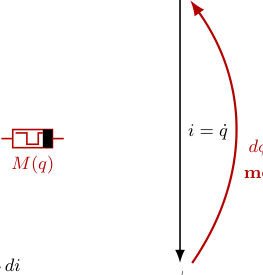
<figcaption class="paper-figure-caption"><b>Fig 1.</b> Figure 1. The four fundamental two-terminal elements as relations among the pairs (v, i, q, ϕ).</figcaption>
</figure>
<figure class="paper-figure-card">
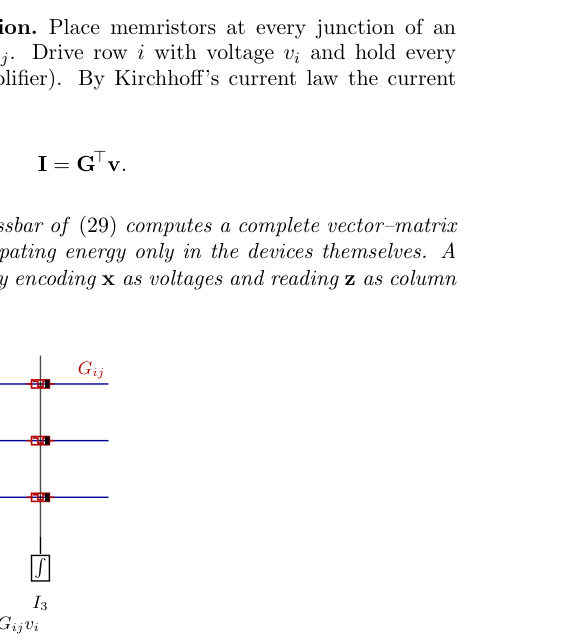
<figcaption class="paper-figure-caption"><b>Fig 2.</b> Figure 5. Analog vector–matrix multiplication in a memristive crossbar. Input voltages vi drive the rows; each junction memristor Gij injects a current Gijvi onto its column; Kirchhoff’s law sums them, and a transimpedance integrator reads Ij = P i Gijvi. The whole product I = G⊤v is computed in one step (Theorem 5.1).</figcaption>
</figure>
<figure class="paper-figure-card">
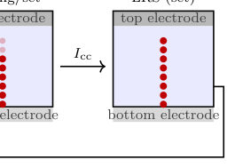
<figcaption class="paper-figure-caption"><b>Fig 3.</b> Figure 7. Microscopic mechanism of bipolar resistive switching. Under +Vset mo- bile species (oxygen vacancies or metal cations, red) drift from the active electrode and nucleate a conductive filament across the oxide; the compliance current Icc caps its cross-section—and hence Gmax (18). A reverse −Vreset ruptures the filament, returning the cell toward the HRS. Partial set/reset stops the front at intermediate heights, realizing the analog sub-levels of Section 3; each such event is an act of resistive communication.</figcaption>
</figure>
<figure class="paper-figure-card">
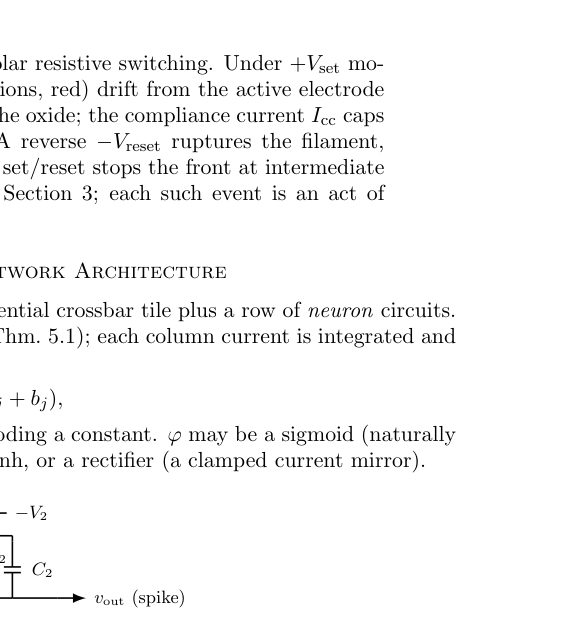
<figcaption class="paper-figure-caption"><b>Fig 4.</b> Figure 8. Neuristor built from two Mott memristors M1, M2, each shunted by a capacitance Ck and biased with opposite polarity. Crossing the insulator–metal transition voltage triggers an all-or-nothing relaxation spike at vout: the electronic action potential used as the spiking neuron at each tile output.</figcaption>
</figure>
<figure class="paper-figure-card">
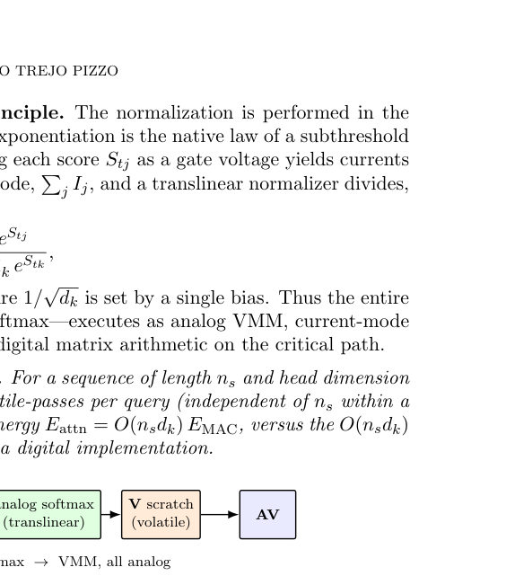
<figcaption class="paper-figure-caption"><b>Fig 5.</b> Figure 10. In-memory self-attention. Queries drive a volatile scratch crossbar holding K⊤to produce scores S (one VMM); a current-mode translinear stage com- putes the softmax; a second VMM against a volatile V crossbar yields the context AV. Diffusive (self-erasing) memristors serve as the KV scratch, avoiding non- volatile rewrite wear.</figcaption>
</figure>
</div>

<p><strong>Summary.</strong> This work presents a comprehensive, physics-based blueprint for an in-memory neuromorphic processor using multi-level memristive synapses. By performing analog matrix multiplication directly where weights are stored, it bypasses the energy limitations of data movement inherent in conventional digital computing architectures. The resulting architecture is highly scalable and extremely energy efficient for modern AI workloads like LLMs.</p>
<p><strong>Why it may be interesting.</strong> While focused on AI hardware, the underlying physical modeling of state evolution ($\dot{x} = f(x, v)$) derived from charge/ion dynamics shares mathematical parallels with non-equilibrium statistical mechanics used to model complex material states.</p>
<details>
<summary>Detailed structure</summary>
<p><strong>Main problem.</strong> Overcoming the von Neumann bottleneck in data-intensive AI workloads by integrating memory and computation onto a single chip.</p>
<p><strong>Main result.</strong> The proposed memristive crossbar fabric achieves energy efficiency orders of magnitude better than digital accelerators for LLM inference by performing MAC operations in the analog domain.</p>
<p><strong>Method.</strong> Developing physics-based models derived from ionic transport (Nernst–Planck) to characterize multi-level conductance states, and then applying these devices in a full neuromorphic architecture.</p>
<p><strong>Model / system.</strong> The system is a memristive crossbar fabric built using $    ext{HfO}_2$-based resistive synapses, capable of storing quasi-continuous analog weights. It implements computation via Kirchhoff's laws ($\mathbf{I} = \mathbf{G}^  op\mathbf{v}$) in the physical domain.</p>
<p><strong>Key observables.</strong> Energy per token ($E_{	ext{tok}}$), Throughput ($ ext{tok}/   ext{s}$), Number of distinguishable conductance levels ($L_{th}$), and Output Current ($\mathbf{I}$).</p>
<p><strong>Important parameters / regimes.</strong> Device parameters include the dynamic range ($
ho = G_{max}/G_{min}$) and the read-noise floor ($\sigma G_{th}$); architectural scaling involves 3D stacking depth ($T$) and cell area ($a_{   ext{cell}}$).</p>
<p><strong>Assumptions / limitations.</strong> The model assumes that weight movement energy dominates digital costs, justifying the in-memory approach; performance figures are projections based on ideal device behavior.</p>
<p><strong>Figures summary.</strong> Figures illustrate the physical cross-section of 3D BEOL integration, the overall memristive-FPGA system architecture, and comparative roofline analyses showing superior scaling over digital methods.</p>
<p><strong>Paper structure.</strong> The paper progresses from fundamental physics modeling (ionic transport) to device characterization (level count, noise), then details the analog computation primitives (VMM, self-attention), and concludes with architectural blueprints for full LLM inference engines.</p>
</details>
<details>
<summary>Abstract</summary>
<p>Building on resistive communication, this paper presents a physics-based design of an on-chip neural network with multi-level memristive synapses supporting a dense spectrum of conductance states. Derived from ionic transport physics, we develop a state-variable model and quantify storable sub-levels under thermal noise, drift, and quantized conductance. We assemble these devices into a 1T1R crossbar fabric, derive the linear algebra of analog vector-matrix multiplication (VMM) under wire resistance, and design a differential synapse for signed weights. A multilayer pipeline executes inference, backpropagation, and weight updates physically in the analog domain. We derive the in-situ outer-product learning rule, its discretization onto the conductance lattice, and the resulting quantization noise. We provide energy, area, capacity, and inter-tile models, showing this substrate is ideally suited for large language models (LLMs). Our design eliminates weight movement, surpassing binary ReRAM and traditional CMOS. We detail the material stack (HfO_2-based), the FEOL/BEOL CMOS foundry-integration flow, a self-contained SPICE model, the complete memristive-FPGA neuromorphic system, and an in-memory self-attention engine with current-mode translinear softmax. Finally, a ternary BitNet datapath shows projected per-token efficiency orders of magnitude better than advanced CPUs or GPUs. The result is a self-contained hardware-native blueprint for a high-density, analog, in-memory neural processor.</p>
</details>
<p><sub><a href="#top">↑ back to top</a></sub></p>

<p><a id="paper-2606.23490"></a></p>
<h3 id="anomalous-charge-density-wave-in-a-two-dimensional-superatomic-superconductor"><a href="http://arxiv.org/abs/2606.23490v1">Anomalous charge density wave in a two-dimensional superatomic superconductor</a></h3>
<p><strong>Authors:</strong> Boqin Song, Shuaishuai Sun, Zhongxu Wei, Xinbo Wang, Xiaoping Ma, Kaifa Luo, Lei Wang, Jun Deng, Xu Chen, Tian Qian, Shuya Xing, Zhihai Cheng, Jiangang Guo, Tianping Ying, Xiaolong Chen<br>
<strong>Type:</strong> experiment · <strong>Category:</strong> strongly correlated electrons · <strong>PDF:</strong> <a href="https://arxiv.org/pdf/2606.23490v1">https://arxiv.org/pdf/2606.23490v1</a><br>
<strong>Analysis basis:</strong> full PDF text, analyzed in chunks
<strong>Topic relevance:</strong> <code>Frenkel-Kontorova</code> <strong>2/5</strong> · <code>Kondo &amp; dissipative impurity</code> <strong>1/5</strong> · <code>analog quantum simulation</code> <strong>1/5</strong> · <code>driven-dissipative phase transition</code> <strong>1/5</strong> · <code>non-equilibrium dynamics</code> <strong>1/5</strong></p>
<div class="figure-strip-hint">↔ Scroll figures horizontally</div>
<div class="paper-figures-scroll">
<figure class="paper-figure-card">
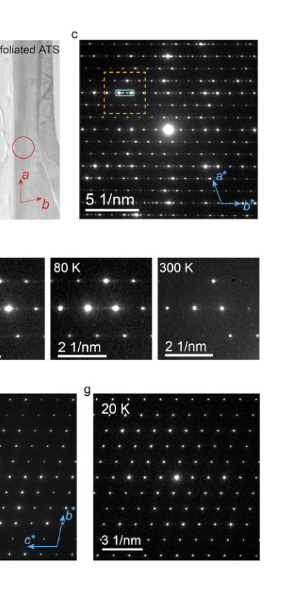
<figcaption class="paper-figure-caption"><b>Fig 1.</b> Fig. 1 | Superatomic lattice reconstruction. a Schematic of the Au6Te12Se8 superatom connected through inter-cluster quasi-bonds. Bond lengths along three axes are labeled using the color same to the axes. Each unit cell contains one superatom. b Real-space image of an exfoliated thin flake. Selected-area electron diffraction (SAED) is performed in the red-circled region, with the electron-beam oriented perpendicular to the ab-plane. Inset illustrates the experimental geometry. c SAED pattern at 20 K revealing additional diffraction spots at 1/3 b*. d Temperature evolution of CDW peaks acquired from the orange dashed square shown in (c). Superlattice spots broaden at 80 K and disappear by...</figcaption>
</figure>
</div>

<p><strong>Summary.</strong> This work reports anomalous Charge Density Wave behavior in the superatomic superconductor Au6Te12Se8, demonstrating a dramatic enhancement of $T_{	ext{CDW}}$ when approaching the 2D limit. Using advanced microscopy and spectroscopy, the authors show the CDW is governed by transverse phonons with large lattice displacements, highlighting a novel interplay between dimensionality, electron-phonon coupling, and superconductivity.</p>
<p><strong>Why it may be interesting.</strong> The study bridges concepts from strongly correlated electron physics (CDW/SC competition) with mesoscale quantum phenomena in engineered 2D materials. The large lattice displacements suggest strong coupling mechanisms that could be relevant to understanding exotic superconducting pairing symmetries or charge ordering instabilities in other correlated systems.</p>
<details>
<summary>Detailed structure</summary>
<p><strong>Main problem.</strong> The study investigates anomalous Charge Density Wave (CDW) behaviors in a two-dimensional superatomic superconductor, contrasting them with conventional CDWs and exploring the competition between CDW and superconductivity.</p>
<p><strong>Main result.</strong> The CDW exhibits an unprecedented dimensional enhancement, increasing its transition temperature ($T_{	ext{CDW}}$) from $<2$ K in bulk to 110 K near the superatomic limit. This suggests a novel mechanism governed by transverse phonons and collective superatom vibrations.</p>
<p><strong>Method.</strong> A combination of advanced techniques was used, including liquid helium-temperature transmission electron microscopy (He-TEM), Scanning Tunneling Microscopy (STM) for real-space imaging, ultrafast pump-probe spectroscopy, and transport measurements on exfoliated flakes.</p>
<p><strong>Model / system.</strong> The physical system is the 2D superatomic superconductor Au6Te12Se8. The research focuses on how its unique quasi-bonding structure leads to CDW formation that is highly sensitive to dimensionality (superatomic limit).</p>
<p><strong>Key observables.</strong> CDW signature in SAED spots, real-space lattice displacements ($\sim 4$ Å via STM), temperature dependence of $T_{	ext{CDW}}$, and gap opening observed in pump-probe spectroscopy.</p>
<p><strong>Important parameters / regimes.</strong> Dimensionality (bulk vs. superatomic limit), Temperature ($T_{	ext{CDW}}$ enhancement from $<2$ K to 110 K), Lattice displacement amplitude ($\sim 4$ Å).</p>
<p><strong>Assumptions / limitations.</strong> The CDW mechanism is suggested to be mediated by Electron-Phonon Coupling (EPC) rather than simple Fermi surface nesting, and the observed phenomena are strongly dependent on the material's superatomic structure.</p>
<p><strong>Figures summary.</strong> Figures show SAED patterns confirming thickness dependence of CDW spots; STM maps visualize transverse Peierls transition via charge redistribution ($ ext{d}I/    ext{d}V$); and pump-probe data reveal gap opening correlated with CDW formation in thin flakes.</p>
<p><strong>Paper structure.</strong> The paper systematically presents evidence across multiple techniques: SAED confirms dimensionality dependence, STM visualizes the anomalous transverse lattice distortion, transport measurements quantify $T_{	ext{CDW}}$ enhancement with thickness, and ultrafast spectroscopy probes the associated electronic gap opening.</p>
</details>
<details>
<summary>Abstract</summary>
<p>The spatial modulation of electron density into a wave-like pattern, known as charge density wave (CDW), represents a fundamental quantum state that often coexists with superconductivity, quantum Hall states, axion insulating phases and etc. Conventional CDWs are mediated by longitudinal acoustic phonons, exhibit picometer-scale lattice distortions ($10^{-12}$--$10^{-11}$ m), and typically vanish approaching the atomic limit. Here, we report a series of anomalous CDW behaviors in the 2D superatomic superconductor Au$_6$Te$_{12}$Se$_8$. Remarkably, its CDW is governed by transverse phonons, accompanied by an extraordinarily high real-space displacement of $\sim 4$ Ångström. Furthermore, we observe an exotic dimensional response persisting up to micrometer-scale thickness, a regime where other materials are already considered as bulk. Through liquid helium-temperature transmission electron microscopy, ultrafast pump-probe spectroscopy and transport measurements, we demonstrate a dramatic enhancement of the CDW transition temperature ($T_{\text{CDW}}$) from $<2$ K in the bulk to 110 K in approaching the ``superatomic limit''. Our findings not only reveal novel facets of both CDW and superatomic materials, but the competition between this anomalous CDW and superconductivity opens avenues for exploring unconventional electron-phonon interactions.</p>
</details>
<p><sub><a href="#top">↑ back to top</a></sub></p>

<p><a id="paper-2606.22128"></a></p>
<h3 id="effect-of-weak-positional-disorder-on-the-miniband-structure-of-spherical-quantum-dot-chains"><a href="http://arxiv.org/abs/2606.22128v1">Effect of weak positional disorder on the miniband structure of spherical quantum dot chains</a></h3>
<p><strong>Authors:</strong> R. Ya. Leshko<br>
<strong>Type:</strong> theory · <strong>Category:</strong> disordered systems and neural networks · <strong>PDF:</strong> <a href="https://arxiv.org/pdf/2606.22128v1">https://arxiv.org/pdf/2606.22128v1</a><br>
<strong>Analysis basis:</strong> full PDF text, analyzed in chunks
<strong>Topic relevance:</strong> <code>Frenkel-Kontorova</code> <strong>2/5</strong> · <code>Keldysh / 2PI / non-Gaussian methods</code> <strong>1/5</strong> · <code>Kondo &amp; dissipative impurity</code> <strong>1/5</strong> · <code>analog quantum simulation</code> <strong>1/5</strong> · <code>non-equilibrium dynamics</code> <strong>1/5</strong></p>
<div class="figure-strip-hint">↔ Scroll figures horizontally</div>
<div class="paper-figures-scroll">
<figure class="paper-figure-card">
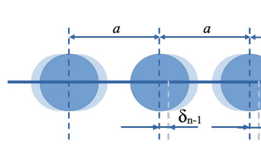
<figcaption class="paper-figure-caption"><b>Fig 1.</b> Figure 1. (Colour online) One-dimensional chains of spherical QDs.</figcaption>
</figure>
<figure class="paper-figure-card">
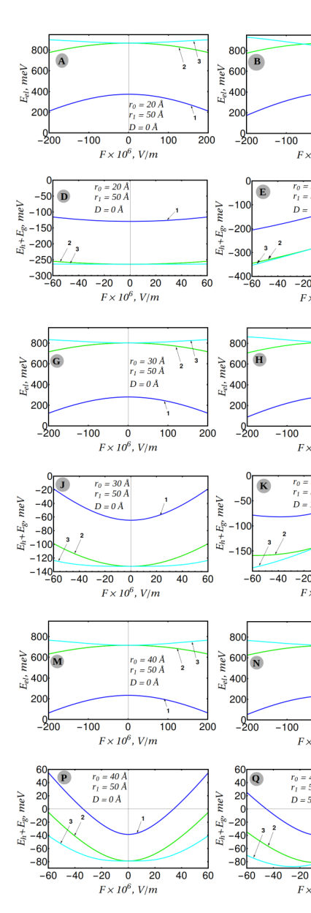
<figcaption class="paper-figure-caption"><b>Fig 2.</b> Figure 2. (Colour online) Electron miniband structure of an ideal (blue curves 1) and a disordered (red curves 2) spherical QD chain.</figcaption>
</figure>
<figure class="paper-figure-card">
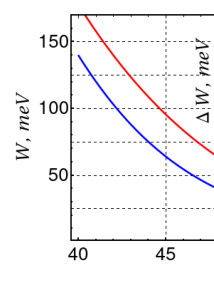
<figcaption class="paper-figure-caption"><b>Fig 3.</b> Figure 3. (Colour online) Electron miniband width calculated with (red curve 1) and without (blue curve 2) disorder. The inset shows the difference in miniband widths between the disordered and ideal cases.</figcaption>
</figure>
<figure class="paper-figure-card">
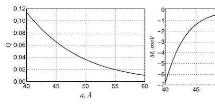
<figcaption class="paper-figure-caption"><b>Fig 4.</b> Figure 4. Dependence of integrals 𝑄, 𝑀, and 𝐵on the period 𝑎.</figcaption>
</figure>
</div>

<p><strong>Summary.</strong> This theoretical paper analyzes the effect of weak positional disorder on the miniband structure of 1D chains of quantum dots using a tight-binding model. By averaging over Gaussian fluctuations, the authors show that disorder broadens the energy bands but does not induce localization in the weak regime. This work is vital for understanding the robustness of electronic transport in imperfect nanoscale materials.</p>
<p><strong>Why it may be interesting.</strong> This work provides quantitative predictions for how structural imperfections (disorder) modify fundamental electronic band properties in nanoscale quantum structures, which is crucial for designing reliable solid-state quantum devices.</p>
<details>
<summary>Detailed structure</summary>
<p><strong>Main problem.</strong> The study aims to elucidate how weak positional disorder affects the electronic miniband structure within one-dimensional chains of spherical quantum dots.</p>
<p><strong>Main result.</strong> Weak positional disorder causes a measurable broadening of the minibands, although the states remain delocalized because the Anderson localization length significantly exceeds the lattice constant in this regime.</p>
<p><strong>Method.</strong> The authors developed a theoretical framework using the tight-binding approximation combined with an effective-medium approach to average over Gaussian fluctuations in inter-dot spacing.</p>
<p><strong>Model / system.</strong> The system modeled is a one-dimensional chain of spherical quantum dots (e.g., GaAs QDs) embedded in a matrix, treated as an infinite periodic structure subjected to small random positional deviations ($\sigma$).</p>
<p><strong>Key observables.</strong> Miniband width ($W$), disorder-renormalized Hamiltonian parameters ($\langle M 
angle, \langle B 
angle, \langle Q 
angle$), and the Anderson localization length ($\xi_{loc}$).</p>
<p><strong>Important parameters / regimes.</strong> Weak disorder regime ($\sigma \ll a$); low temperatures ($T 	o 0$ K); Gaussian distribution for positional deviations.</p>
<p><strong>Assumptions / limitations.</strong> The analysis relies on the nearest-neighbor approximation, assuming weak disorder ($\sigma \ll a$), and neglecting finite temperature effects.</p>
<p><strong>Figures summary.</strong> Figure 2 compares ideal vs. disordered minibands; Figure 3 shows how the miniband width changes with lattice period ($a$) for both cases.</p>
<p><strong>Paper structure.</strong> The paper develops the theoretical framework, derives averaged effective dispersion relations by incorporating disorder corrections ($\sigma^2$), and then analyzes the resulting broadening effects on key observables like the miniband width.</p>
</details>
<details>
<summary>Abstract</summary>
<p>A theoretical framework is developed for the electron miniband structure in one-dimensional chains of spherical quantum dots subjected to weak positional disorder. Within the tight-binding approximation combined with the effective-medium approach, the stochastic fluctuations of the inter-dot spacing are mapped onto the renormalization of the key Hamiltonian parameters: the hopping integral $ B $, the overlap integral $ Q $, and the on-site energy shift $ M $. Analytical expressions for these disorder-renormalized parameters are derived by performing an ensemble average over a narrow Gaussian distribution of positional deviations ($ σ\ll a $). The resulting generalized dispersion relation shows that weak positional disorder causes a broadening of the minibands. Specifically, for typical fabrication fluctuations $σ= 0.1\,a $, the miniband width increases by 8-12\% (depending on the mean inter-dot distance $a$). At the same time, the sensitivity of the miniband width to disorder decreases rapidly with increasing lattice period due to the exponential decay of the electron wave functions. In the considered weak-disorder regime, the Anderson localization length significantly exceeds the lattice constant, so the miniband states remain delocalized.</p>
</details>
<p><sub><a href="#top">↑ back to top</a></sub></p>

<p><a id="paper-2606.22553"></a></p>
<h3 id="dimensional-reduction-for-optical-beams-with-thermal-nonlocal-nonlinearity"><a href="http://arxiv.org/abs/2606.22553v1">Dimensional reduction for optical beams with thermal nonlocal nonlinearity</a></h3>
<p><strong>Authors:</strong> Francesco Lorenzi, Luca Salasnich<br>
<strong>Type:</strong> theory · <strong>Category:</strong> other · <strong>PDF:</strong> <a href="https://arxiv.org/pdf/2606.22553v1">https://arxiv.org/pdf/2606.22553v1</a><br>
<strong>Analysis basis:</strong> full PDF text, analyzed in chunks
<strong>Topic relevance:</strong> <code>Keldysh / 2PI / non-Gaussian methods</code> <strong>1/5</strong> · <code>correlated / nonlocal dissipation</code> <strong>1/5</strong> · <code>methods for driven-dissipative</code> <strong>1/5</strong> · <code>non-equilibrium dynamics</code> <strong>1/5</strong></p>
<div class="figure-strip-hint">↔ Scroll figures horizontally</div>
<div class="paper-figures-scroll">
<figure class="paper-figure-card">
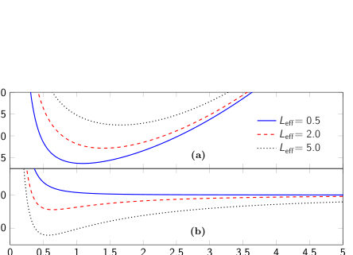
<figcaption class="paper-figure-caption"><b>Fig 1.</b> Figure 1 Effective potential Veff(σ) of the variational width dynamics for different nonlocality lengths Leff. Panel (a) shows the defocusing regime γ = 0.5 in the absence of a confining potential (Ω= 0), and panel (b) shows the focusing regime γ = −0.5 in the presence of a confining potential Ω= 1. The index S is chosen to S = 2.</figcaption>
</figure>
<figure class="paper-figure-card">
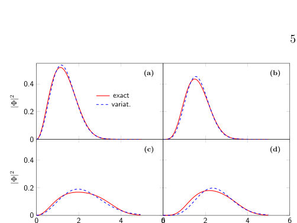
<figcaption class="paper-figure-caption"><b>Fig 2.</b> Figure 2 Comparison of stationary radial intensity pro- files of the beam |Φ(r)|2 obtained from imaginary time evolution of the paraxial diffraction operator (solid red lines) and the variational ansatz (dashed blue lines). Panels (a) and (b) show the case of Leff = 0.5 for vortex indices S = 1 and S = 2, respectively. Panels (c) and (d) show the regime of Leff = 5.0 for S = 1 and S = 2. In this plot Ω= 1, and γ = 0.5.</figcaption>
</figure>
<figure class="paper-figure-card">
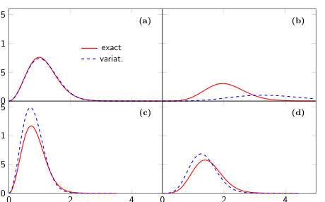
<figcaption class="paper-figure-caption"><b>Fig 3.</b> Figure 3 Comparison of stationary radial intensity pro- files of the beam |Φ(r)|2 obtained from imaginary time evolution of the paraxial diffraction operator (solid red lines) and the variational ansatz (dashed blue lines). Panels (a) and (b) show the case of (Leff = 1.2) for vor- tex indices S = 1 and S = 2, respectively. Panels (c) and (d) show the case of Leff = 5.0, also for S = 1 and S = 2. In this plot Ω= 0 and γ = −0.22.</figcaption>
</figure>
<figure class="paper-figure-card">
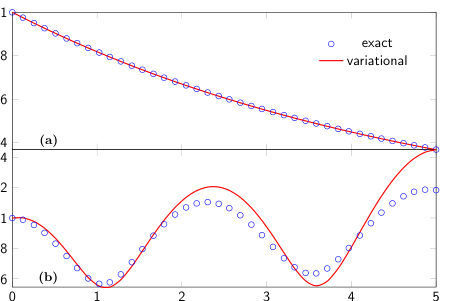
<figcaption class="paper-figure-caption"><b>Fig 4.</b> Figure 4 Comparison of the axial beam dynamics ob- tained from full 2D paraxial propagation (blue markers) and the variational model (solid red lines). Panel (a) shows the evolution of the normalized power |A(z)|2, while panel (b) reports the corresponding transverse width σ(z). The simulations use a vortex beam with p = 0, S = 1 and initial conditions A(0) = 1, σ(0) = 1, and b(0) = 0 (constant radial phase). The nonlinear pa- rameters are γ = −0.15, Leff = 40, α = 0.2, and Ω= 1.</figcaption>
</figure>
<figure class="paper-figure-card">

<figcaption class="paper-figure-caption"><b>Fig 5.</b> Figure 4 shows the dynamical evolution of a vortex beam S = 1 propagating with losses set to α = 0.2 with strong thermal nonlocality Leff = 40. The ax- ial amplitude |A(z)|2 decays monotonically due to linear absorption (panel (a)), while the transverse width σ(z) undergoes damped breathing oscillations constrained by the graded-index potential (panel (b)). The correspon- dence between the reduced one-dimensional variational model (solid red lines) and the full two-dimensional split- step Fourier simulations (blue markers) is substantial. This demonstrates that, despite the moderate discrepan- cies observed in the static mode profiles, the variational method accurately captures the overall...</figcaption>
</figure>
</div>

<p><strong>Summary.</strong> This paper develops a method to simplify the complex dynamics of optical beams in thermally nonlinearly coupled media. By applying dimensional reduction techniques using Laguerre-Gauss mode ansatze, the authors derive an effective 1D model. This provides a computationally tractable framework for understanding how nonlocal thermal effects alter beam propagation compared to simpler local models.</p>
<p><strong>Why it may be interesting.</strong> This work is highly relevant to quantum optics and open quantum systems because it tackles complex nonlinear wave propagation in structured media, providing analytical tools (variational reduction) where full numerical simulation of nonlocal effects is prohibitive.</p>
<details>
<summary>Detailed structure</summary>
<p><strong>Main problem.</strong> The work aims to extend dimensional reduction techniques, inspired by the nonpolynomial Schrödinger equation (NPSE), to model optical beams propagating in media exhibiting thermal nonlocal nonlinearity.</p>
<p><strong>Main result.</strong> Explicit analytic expressions for variational equations are derived, yielding a tractable, reduced 1D description of beam dynamics that captures mode order and nonlocality dependence.</p>
<p><strong>Method.</strong> The authors employ a variational ansatz based on Laguerre–Gauss modes to reduce the full spatial nonlinear Schrödinger equation coupled to a screened Poisson heat equation into a set of coupled ordinary differential equations.</p>
<p><strong>Model / system.</strong> The system models optical beam propagation in a graded-index medium where the nonlinearity arises from the thermorefractive effect. The governing physics involves coupling the paraxial wave equation with a screened Poisson equation for temperature, which dictates the nonlocal refractive index change.</p>
<p><strong>Key observables.</strong> Axial amplitude $|A(z)|^2$, transverse width $\sigma(z)$, and radial intensity profiles $|\Phi(r)|^2$.</p>
<p><strong>Important parameters / regimes.</strong> Nonlocality length scale ($L_{	ext{eff}}$), linear losses coefficient ($\alpha_0$), GRIN potential strength ($\Omega$), and the nonlinear coupling constant ($\gamma$).</p>
<p><strong>Assumptions / limitations.</strong> The primary assumptions include using the paraxial approximation, employing a variational ansatz based on annular Laguerre–Gauss modes, and approximating the heat diffusion equation with a screened Poisson-type model.</p>
<p><strong>Figures summary.</strong> Figures compare radial intensity profiles $|\Phi(r)|^2$ between exact numerical solutions and the variational ansatz for various nonlocality strengths ($L_{	ext{eff}}$) and vortex orders. They also track the evolution of amplitude and width over propagation distance $z$.</p>
<p><strong>Paper structure.</strong> The paper first establishes the full coupled system (NLSE + screened Poisson). It then details the variational reduction process, deriving effective Lagrangians for different components (local vs. nonlocal). Finally, it analyzes the resulting reduced equations by comparing predictions against known exact solutions and examining parameter dependence.</p>
</details>
<details>
<summary>Abstract</summary>
<p>Nonlocal optical nonlinearities arising from the thermorefractive effect provide a long-range material response determined by heat diffusion and absorption. In graded-index media, this nonlocality fundamentally alters modal interactions, yet its accurate modeling remains computationally demanding when starting from the full spatial nonlinear Schrödinger equation. In this work, inspired by the nonpolynomial Schrödinger equation (NPSE) framework, we extend the dimensional reduction techniques to incorporate thermally mediated nonlocal nonlinearities. By coupling the optical field to an equation for the temperature-induced refractive index change, and employing a variational ansatz based on Laguerre--Gauss modes of the annular kind, of arbitrary azimuthal order, we derive explicit analytic expressions for the variational equations. The resulting effective model captures the dependence of the nonlinear interaction on mode order and degree of nonlocality, providing a tractable reduced description of the dynamics in thermal nonlocal media.</p>
</details>
<p><sub><a href="#top">↑ back to top</a></sub></p>

<p><a id="paper-2606.21793"></a></p>
<h3 id="geometric-structures-of-pseudo-sonic-curves-in-self-similar-solutions-of-the-euler-equations-for-potential-flow"><a href="http://arxiv.org/abs/2606.21793v1">Geometric Structures of Pseudo-Sonic Curves in Self-Similar Solutions of the Euler Equations for Potential Flow</a></h3>
<p><strong>Authors:</strong> Gui-Qiang G. Chen, Mikhail Feldman, Xin Gao, Wei Xiang<br>
<strong>Type:</strong> theory · <strong>Category:</strong> other · <strong>PDF:</strong> <a href="https://arxiv.org/pdf/2606.21793v1">https://arxiv.org/pdf/2606.21793v1</a><br>
<strong>Analysis basis:</strong> full PDF text, analyzed in chunks
<strong>Topic relevance:</strong> <code>Keldysh / 2PI / non-Gaussian methods</code> <strong>1/5</strong> · <code>methods for driven-dissipative</code> <strong>1/5</strong> · <code>non-equilibrium dynamics</code> <strong>1/5</strong></p>
<div class="figure-strip-hint">↔ Scroll figures horizontally</div>
<div class="paper-figures-scroll">
<figure class="paper-figure-card">
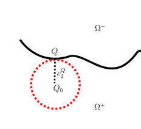
<figcaption class="paper-figure-caption"><b>Fig 1.</b> Figure 2.1. The pseudo-sonic curve in the (ξ, η)–coordinates.</figcaption>
</figure>
<figure class="paper-figure-card">
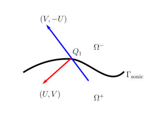
<figcaption class="paper-figure-caption"><b>Fig 2.</b> Figure 4.1.</figcaption>
</figure>
<figure class="paper-figure-card">
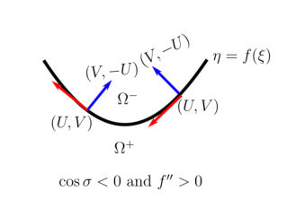
<figcaption class="paper-figure-caption"><b>Fig 3.</b> Figure 4.2. The convexity of the sonic curve.</figcaption>
</figure>
<figure class="paper-figure-card">
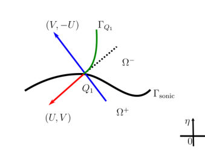
<figcaption class="paper-figure-caption"><b>Fig 4.</b> Figure 5.1. The structure of the streamlines near Γsonic.</figcaption>
</figure>
<figure class="paper-figure-card">

<figcaption class="paper-figure-caption"><b>Fig 5.</b> Figure 7.1. The sonic point Q.</figcaption>
</figure>
</div>

<p><strong>Summary.</strong> This paper rigorously analyzes the geometry of pseudo-sonic curves arising from self-similar solutions of potential flow governed by the Euler equations. Using advanced PDE techniques, it proves that these critical sonic curves must possess specific geometric structures, such as being circular arcs, especially when considering non-uniform incoming flows. This provides a powerful mathematical framework for understanding transonic phenomena in fluid dynamics.</p>
<p><strong>Why it may be interesting.</strong> While focused on fluid dynamics, the mathematical techniques—dealing with mixed-type degeneracies and establishing geometric constraints via maximum principles—are highly relevant to analyzing nonlinear PDEs found in quantum field theory or plasma physics.</p>
<details>
<summary>Detailed structure</summary>
<p><strong>Main problem.</strong> The paper analyzes the geometric structures of pseudo-sonic curves ($\Gamma_{	ext{sonic}}$) that arise in two-dimensional self-similar solutions to the Euler equations for potential flow.</p>
<p><strong>Main result.</strong> Under general conditions, the analysis proves that the pseudo-sonic curve must be an arc, and furthermore, the pseudo-velocity at these points must be normal to the curve. For specific physical problems like shock reflection, this implies a precise geometric characterization of the sonic structure.</p>
<p><strong>Method.</strong> The authors employ rigorous analytical techniques involving mixed hyperbolic-elliptic PDEs, local coordinate transformations, maximum principles, and comparison with known solutions (like circular arcs) to constrain the geometry of $\Gamma_{	ext{sonic}}$.</p>
<p><strong>Model / system.</strong> The physical system is 2D potential flow governed by the Euler equations. The mathematical model involves a second-order PDE of mixed type, where degeneracy occurs precisely along the pseudo-sonic curve ($\Gamma_{	ext{sonic}}$).</p>
<p><strong>Key observables.</strong> Pseudo-sonic curve ($\Gamma_{	ext{sonic}}$), pseudo-velocity $(U, V)$, sonic speed ($c$), and the stream function $\psi$.</p>
<p><strong>Important parameters / regimes.</strong> The flow regime (supersonic/subsonic) relative to $c$, and the degree of perturbation from uniform incoming flow.</p>
<p><strong>Assumptions / limitations.</strong> Assumptions include the existence of smooth solutions, local differentiability ($C^{1,1}$ or higher), and specific boundary conditions required for applying maximum principles in various sections.</p>
<p><strong>Figures summary.</strong> Figures illustrate characteristic directions, streamline structures near $\Gamma_{	ext{sonic}}$ (showing convexity/non-convexity based on flow regime), and the geometry of characteristics in supersonic regions.</p>
<p><strong>Paper structure.</strong> The paper develops results sequentially: first characterizing simple cases (e.g., circular curves if velocity is normal); then establishing general theorems constraining the curve's shape using differential operators ($\partial_\perp$); followed by applying these tools to specific physical problems like shock reflection, culminating in proofs that $\Gamma_{	ext{sonic}}$ must be an arc.</p>
</details>
<details>
<summary>Abstract</summary>
<p>We are concerned with the geometric structures of pseudo-sonic curves in two-dimensional self-similar solutions for the Euler equations for potential flow, allowing for non-uniform supersonic states. Mathematically, the governing second-order potential flow equation is of mixed hyperbolic-elliptic type, with degeneracy occurring along the pseudo-sonic curve. In this paper, we develop rigorous analytical approaches to analyze the geometric structures of pseudo-sonic curves in such self-similar solutions. We first show that the pseudo-sonic curve is necessarily a circle if the pseudo-velocity at each point is a normal to the curve. We then analyze the general case in which the pseudo-velocity on the pseudo-sonic point is not a normal to the curve, and study the geometric properties of streamlines in a neighborhood of the pseudo-sonic curve. Next, we establish two theorems that provide sufficient conditions ensuring that the pseudo-velocity at a pseudo-sonic point is normal to the curve, under natural assumptions on the local behavior of the solution. These results yield a precise characterization of the geometry of pseudo-sonic curves. Finally, we apply the developed theory to the shock reflection-diffraction problem with non-uniform incoming flow. We prove that the pseudo-sonic curve must be an arc if the solution is a $C^2$-small perturbation, either in the pseudo-supersonic or pseudo-subsonic region, of a solution with uniform incoming flow. In particular, the density and velocity must be constant, corresponding to the radius and the center of the pseudo-sonic arc, respectively. Moreover, we prove that the solution is $C^{2,α}$-regular in the pseudo-subsonic region up to the sonic arc (except at point $P_1$). The techniques and ideas developed in this paper are expected to be applicable to other nonlinear problems involving similar mixed-type degeneracies.</p>
</details>
<p><sub><a href="#top">↑ back to top</a></sub></p>

<p><a id="paper-2606.23328"></a></p>
<h3 id="reactive-force-field-for-psni-system-atomistic-insight-into-the-early-stage-of-black-phosphorus-and-phosphorene-synthesis-process"><a href="http://arxiv.org/abs/2606.23328v1">Reactive Force Field for P/Sn/I System: Atomistic Insight into the Early Stage of Black Phosphorus and Phosphorene Synthesis Process</a></h3>
<p><strong>Authors:</strong> Djuric Brice Talonpa Tchoffo, Ismail Benabdallah, Petr Neugebauer, Anouar Belhboub, Abdelouahad El Fatimy<br>
<strong>Type:</strong> theory · <strong>Category:</strong> numerical methods · <strong>PDF:</strong> <a href="https://arxiv.org/pdf/2606.23328v1">https://arxiv.org/pdf/2606.23328v1</a><br>
<strong>Analysis basis:</strong> full PDF text, analyzed in chunks
<strong>Topic relevance:</strong> <code>Keldysh / 2PI / non-Gaussian methods</code> <strong>1/5</strong> · <code>methods for driven-dissipative</code> <strong>1/5</strong> · <code>non-equilibrium dynamics</code> <strong>1/5</strong></p>
<div class="figure-strip-hint">↔ Scroll figures horizontally</div>
<div class="paper-figures-scroll">
<figure class="paper-figure-card">

<figcaption class="paper-figure-caption"><b>Fig 1.</b> Fig. 1. Comparison between energy calculated from DFT (gray) and ReaxFF (red) for (a) Sn- Sn, (b) P-Sn, (c) I-Sn in SnI4 molecule, (d) I-I, and (e) I-P pair interaction in PI3.</figcaption>
</figure>
<figure class="paper-figure-card">

<figcaption class="paper-figure-caption"><b>Fig 2.</b> Fig. 2. Comparison between DFT (gray) and ReaxFF (red) equation of state (EOS) for (a) α- Sn, (b) β-Sn crystals, and (c) formation energies of Snx clusters (x = 2 - 6).</figcaption>
</figure>
<figure class="paper-figure-card">

<figcaption class="paper-figure-caption"><b>Fig 3.</b> Fig. 3. Comparison between reaction energies obtained with DFT (gray) and ReaxFF (red).</figcaption>
</figure>
<figure class="paper-figure-card">

<figcaption class="paper-figure-caption"><b>Fig 4.</b> Figure 1 compares ReaxFF and QM results for each pair interaction. (a) ReaxFF vs DFT for</figcaption>
</figure>
<figure class="paper-figure-card">

<figcaption class="paper-figure-caption"><b>Fig 5.</b> Fig. 4. (a) Formation of SnI2 and SnI4 molecules in the Sn/I2 system, (b) Formation of PI2 and PI3 in the P/I2 system at different effective pressures.</figcaption>
</figure>
</div>

<p><strong>Summary.</strong> This work uses ReaxFF molecular dynamics to simulate the early stages of Black Phosphorus synthesis in a P/Sn/I vapor system. By varying density and iodine concentration, the researchers map out how chemical species form and react. The findings provide an atomistic pathway suggesting that high pressure promotes the formation of stable, BP-like nucleation seeds.</p>
<p><strong>Why it may be interesting.</strong> While focused on materials chemistry, the rigorous application of a reactive force field trained against high-level QM data represents an advanced example of classical simulation techniques used to model complex chemical kinetics and phase transitions, which is relevant to many-body dynamics simulations in condensed matter theory.</p>
<details>
<summary>Detailed structure</summary>
<p><strong>Main problem.</strong> The study aims to understand the atomistic mechanisms governing phosphorus transport and early-stage phase formation during the synthesis of Black Phosphorus (BP) and phosphorene.</p>
<p><strong>Main result.</strong> The simulations reveal that iodine concentration and system density critically control phosphorus recombination, leading to the formation of $ ext{P}_x    ext{I}_y$ motifs and promoting prenucleation into BP-like hexagonal structures under high-density conditions.</p>
<p><strong>Method.</strong> A reactive force field (ReaxFF) was developed and applied within molecular dynamics simulations to model the complex chemical interactions in the P/Sn/I system.</p>
<p><strong>Model / system.</strong> The physical system is the $    ext{P}/ ext{Sn}/    ext{I}$ mixture, simulating vapor-phase synthesis conditions. The methodology relies on developing a highly parameterized ReaxFF potential trained against extensive Quantum Mechanical (QM) data covering bond dissociation, angle/torsion profiles, and equations of state for Sn.</p>
<p><strong>Key observables.</strong> Species formation dynamics ($  ext{SnI}_2$, $  ext{P}_x    ext{I}_y$), cluster size distribution ($    ext{P}_x$ clusters), potential energy ($E_{	ext{system}}$), and structural motifs (BP-like hexagons).</p>
<p><strong>Important parameters / regimes.</strong> System density (varying effective pressures from 0.01 atm to 100 atm) and temperature (923 K).</p>
<p><strong>Assumptions / limitations.</strong> The accuracy of the simulation is contingent upon the comprehensive parameterization of the ReaxFF potential using DFT reference data for various chemical environments.</p>
<p><strong>Figures summary.</strong> Figures illustrate the agreement between DFT and ReaxFF predictions for bond energies, angle distortions, and equations of state. A key figure tracks phosphorus consumption dynamics under varying pressures, showing density-dependent chemistry.</p>
<p><strong>Paper structure.</strong> The paper first details the development and validation of the ReaxFF potential against QM data (bond/angle fitting). It then applies this model to simulate P/Sn/I systems under controlled variations in iodine concentration and external pressure to map out the phase space of early-stage synthesis.</p>
</details>
<details>
<summary>Abstract</summary>
<p>Black phosphorus and its two dimensional counterpart, phosphorene, are typically synthesized through chemical vapor transport using Sn and I2 additives. Chemical vapor deposition synthesis of phosphorene and allotropes is still yet not well understood. Investigating the atomistic mechanisms underlying phosphorus transport and early stage processes is difficult experimentally. In this study, a reactive force field for the PSnI system was developed and applied using ReaxFF based molecular dynamics to explore the early stage phase of the pre nucleation relevant to BP-phosphorene growth. The force field parameters were trained on a comprehensive quantum mechanical dataset covering bond dissociation, angle and torsion profiles, and tin condensed phase equation of state and cluster formation energies, showing strong agreement in both gas and condensed phases. We demonstrate that iodine and density together control phosphorus recombination. Under low density, atomic phosphorus dominates with minimal clustering. Adding I2 greatly increases P-P recombination, promotes the formation of PxIy motifs, and transient SnxPyIz compounds. Higher density systems favor the formation of larger Px clusters and support the development of ternary SnxPyIz compounds that grow by capturing transported phosphorus. At the highest density, the system produces condensed, Hittorf like phosphorus structures at the edges of SnxPyIz clusters, along with BP-like hexagons stabilized by iodine that may act as nucleation seeds. These results offer an atomistic view of transport and early stage steps in BP synthesis and provide a practical reactive model for studying growth conditions and additive effects in BP phosphorene vapor synthesis.</p>
</details>
<p><sub><a href="#top">↑ back to top</a></sub></p>

<p><a id="paper-2606.23022"></a></p>
<h3 id="structural-symmetry-effects-on-the-competition-of-density-waves-and-superconductivity-in-bilayer-nickelates"><a href="http://arxiv.org/abs/2606.23022v1">Structural symmetry effects on the competition of density waves and superconductivity in bilayer nickelates</a></h3>
<p><strong>Authors:</strong> Steffen Bötzel, Aiman Al-Eryani, Jun Zhan, Xianxin Wu, Frank Lechermann, Michael M. Scherer, Ilya M. Eremin<br>
<strong>Type:</strong> theory · <strong>Category:</strong> strongly correlated electrons · <strong>PDF:</strong> <a href="https://arxiv.org/pdf/2606.23022v1">https://arxiv.org/pdf/2606.23022v1</a><br>
<strong>Analysis basis:</strong> full PDF text, analyzed in chunks
<strong>Topic relevance:</strong> <code>Keldysh / 2PI / non-Gaussian methods</code> <strong>1/5</strong> · <code>analog quantum simulation</code> <strong>1/5</strong></p>
<div class="figure-strip-hint">↔ Scroll figures horizontally</div>
<div class="paper-figures-scroll">
<figure class="paper-figure-card">

<figcaption class="paper-figure-caption"><b>Fig 1.</b> FIG. 1. Band structure, Fermi surface, and non-interacting susceptibility of La3Ni2O7 at high and at ambient pres- sure. (a) Band structure for the high-pressure model along high symmetry path for δϵ = δϵ∗. (b) Band structure for the ambient-pressure model along the Amam high-symmetry path. Fermi surface for high- and ambient-pressure phases for δϵ = δϵ+ (c,d). Total and orbital-resolved contributions to the non-interacting susceptibilities for the top of the γ band being located 50 meV above (e,f), at (g,h), and 50 meV below (i,j) the Fermi level using the high-symmetry path. (e,g,i) are for the high-pressure symmetry, whereas (f,h,j) are for the ambient-pressure model. Similarities in...</figcaption>
</figure>
<figure class="paper-figure-card">

<figcaption class="paper-figure-caption"><b>Fig 2.</b> FIG. 2. Leading instabilities within fRG for high- and ambient-pressure phases. Leading instabilities for the high (a) and ambient (b) pressure model as a function of Hund’s cou- pling J for the γ band being located 50 meV above (δϵ+), at (δϵ∗), and 50 meV below (δϵ−) the Fermi level. Dashed black lines illustrate the transition from low J to high J regimes with the maximum Λfin changes from being at δϵ∗to δϵ−.</figcaption>
</figure>
<figure class="paper-figure-card">

<figcaption class="paper-figure-caption"><b>Fig 3.</b> FIG. 4. (a) Leading fRG instabilities for ambient pressure with modeled uniaxial strain as a function of Hund’s coupling J for the γ band being located 50 meV above (δϵ+), at (δϵ∗), and 50 meV below (δϵ−) the Fermi level. Dashed black lines illustrate the transition from low J to high J regimes. Dashed colored lines have been added near the top of the panel to in- dicate the position of the transition to the SDW instability for ambient pressure in the absence of uniaxial strain. (b) Flow of P and the dominant contributions to C(Q1 ≈(π/2, π/2)) and C(˜Q1 ≈(π/2, −π/2)) for J = 0.5 eV for δϵ∗.</figcaption>
</figure>
<figure class="paper-figure-card">

<figcaption class="paper-figure-caption"><b>Fig 4.</b> FIG. 3. Flow of the maximal components of the particle- particle vertex P and the crossed particle-hole vertex, i.e., C(Q1 ≈(π/2, π/2)) and C(˜Q1 ≈(π/2, −π/2)) and their ra- tio. Flows are shown for J = 0.5 eV for ambient pressure for the γ band being located 50 meV above (δϵ+, (a)), at (δϵ∗</figcaption>
</figure>
<figure class="paper-figure-card">

<figcaption class="paper-figure-caption"><b>Fig 5.</b> FIG. 5. Leading instabilities within fRG for ambient pressure phase. Scan of δϵ for the ambient-pressure phase at low J = 0.1 eV (c) and high J = 0.3 eV (d) with dashed lines denoting δϵ+, δϵ∗and δϵ−values.</figcaption>
</figure>
</div>

<p><strong>Summary.</strong> This work uses functional renormalization group theory to study the rivalry between superconductivity and SDW order in bilayer nickelates under varying structural pressures. The key finding is that lattice symmetry, specifically reducing orthorhombicity via strain, is crucial for stabilizing superconductivity by enhancing magnetic fluctuations while frustrating long-range magnetism. This suggests structural tuning can be a primary control knob for high-temperature superconductivity.</p>
<p><strong>Why it may be interesting.</strong> While focused on strongly correlated materials, the use of advanced many-body techniques like fRG to analyze competing orders (SC vs. magnetism) provides general theoretical frameworks applicable to other quantum systems exhibiting such competition.</p>
<details>
<summary>Detailed structure</summary>
<p><strong>Main problem.</strong> The study investigates the competition between spin-density-wave (SDW) order and superconductivity in bilayer nickelates, focusing on how structural symmetry influences this interplay.</p>
<p><strong>Main result.</strong> Structural symmetry, specifically the suppression of orthorhombicity via strain, is identified as a key ingredient that enhances pairing interactions by creating near-degenerate SDW fluctuations, thereby stabilizing superconductivity.</p>
<p><strong>Method.</strong> The research employs the Functional Renormalization Group (fRG) applied to multi-orbital weak-coupling models derived from DFT calculations.</p>
<p><strong>Model / system.</strong> The system is bilayer nickelate La3Ni2O7, analyzed in both ambient and high-pressure crystal structures. The model uses an effective two-orbital Hamiltonian for the Ni sites.</p>
<p><strong>Key observables.</strong> Leading fRG instabilities (divergence of particle-particle or particle-hole vertices), superconducting gap components ($\Delta$), and magnetic susceptibilities ($\chi$).</p>
<p><strong>Important parameters / regimes.</strong> Hund's coupling ($J$), structural symmetry (orthorhombicity vs. tetragonal limit), and the relative on-site potential difference ($\delta\epsilon$).</p>
<p><strong>Assumptions / limitations.</strong> The analysis uses the truncated-unity fRG scheme, neglecting frequency dependencies; some notes mention ignoring feedback from Goldstone fluctuations.</p>
<p><strong>Figures summary.</strong> Figures show band structures, Fermi surfaces, leading instabilities (SC/SDW) vs. Hund's coupling J for different pressures, and flow diagrams illustrating how symmetry affects competing order parameters.</p>
<p><strong>Paper structure.</strong> The paper systematically compares results between high-pressure ($Fmmm$) and ambient-pressure ($Amam$) phases using fRG to map out the competition between SC and SDW instabilities, culminating in an analysis of strain effects to tune structural symmetry.</p>
</details>
<details>
<summary>Abstract</summary>
<p>We investigate the interplay between spin-density-wave (SDW) order and superconductivity in the bilayer nickelate La$_3$Ni$_2$O$_7$ using the functional renormalization group~(fRG) applied to multiorbital weak-coupling models of both the ambient- and high-pressure crystal structures. As Hund's coupling increases, the leading instability evolves from superconductivity to an SDW state with ordering vector $\mathbf{Q}_1 \approx (π/2,π/2)$ (equivalently $\mathbf{Q}_Y \approx (0,π)$ in the orthorhombic $Amam$ unit cell), in agreement with experimental observations. Surprisingly, the ambient- and high-pressure structures exhibit nearly identical non-interacting susceptibilities and leading fRG instabilities, indicating that the emergence of superconductivity under pressure cannot be explained solely by changes in the low-energy electronic structure. Instead, our results identify the suppression of orthorhombicity as a key ingredient for superconductivity. As the system approaches the tetragonal limit, symmetry-related SDW fluctuations become nearly degenerate, frustrating long-range magnetic order while enhancing pairing interactions. These findings highlight lattice symmetry as a central tuning parameter of the competing ordered states in bilayer nickelates and suggest that reducing orthorhombicity through uniaxial strain could stabilize bulk superconductivity already at ambient pressure.</p>
</details>
<p><sub><a href="#top">↑ back to top</a></sub></p>

<p><a id="paper-2606.23074"></a></p>
<h3 id="universality-of-dimensional-crossovers-in-topological-insulators"><a href="http://arxiv.org/abs/2606.23074v1">Universality of dimensional crossovers in topological insulators</a></h3>
<p><strong>Authors:</strong> Lumen Eek, Zeb Osseweijer, Cristiane Morais Smith<br>
<strong>Type:</strong> theory · <strong>Category:</strong> other · <strong>PDF:</strong> <a href="https://arxiv.org/pdf/2606.23074v1">https://arxiv.org/pdf/2606.23074v1</a><br>
<strong>Analysis basis:</strong> full PDF text, analyzed in chunks
<strong>Topic relevance:</strong> <code>analog quantum simulation</code> <strong>1/5</strong> · <code>driven-dissipative phase transition</code> <strong>1/5</strong></p>
<div class="figure-strip-hint">↔ Scroll figures horizontally</div>
<div class="paper-figures-scroll">
<figure class="paper-figure-card">

<figcaption class="paper-figure-caption"><b>Fig 1.</b> FIG. 1. (a) Phase diagram of the model as a function of m and ∆, with the cross indicating the parameters used throughout the rest of the figure (t = 1). Red (white) indicates a topological phase with ν0 = 1 (trivial phase with ν0 = 0). (b) High-symmetry path in the bulk Brillouin zone, the (100) surface Brillouin zone, and the corresponding 1D projected Brillouin zone along [10]. (c) Bulk band structure of Eq. (1) in the topological phase, exhibiting a characteristic camelback feature near the R point. (d) Slab spectrum for [100] termination with thickness Nz = 25, showing a surface Dirac cone at M (inset: surface states). (e) Slab spectrum for Nz = 3, where finite-size effects gap out the...</figcaption>
</figure>
<figure class="paper-figure-card">

<figcaption class="paper-figure-caption"><b>Fig 2.</b> FIG. 2. QSH phase diagrams νQSH as a function of m and ∆for different surface terminations and slab thicknesses. (a)–(e) [100] termination for Nz = 1–5. (f) Corresponding slab unit cell for Nz = 5. (g)–(j) [110] termination for Nz = 2–5. (k) Corresponding slab unit cell for Nz = 5. (l)–(o) [111] termination for Nz = 2–5. (p) Corresponding slab unit cell for Nz = 5. Red (white) regions indicate the topological (trivial) phase with νQSH = 1 (0). In (a)-(e), analytical phase boundaries are indicated with red lines. The expressions for these boundaries are given in the End Matter.</figcaption>
</figure>
<figure class="paper-figure-card">

<figcaption class="paper-figure-caption"><b>Fig 3.</b> FIG. 3. (a) OBC spectrum for a Ny × Nz = 2 × 2 rod with Nx = 100 as a function of m at ∆= 0.3. The background color indicates the value of the Z2 invariant ν, with red (white) denoting the topological (trivial) phase. (b) OBC spectrum for a 3 × 4 rod with Nx = 100 as a function of m at ∆= 0.3. (c) Phase diagrams as a function of |m| and |∆| for rods with different Ny × Nz. Red (white) regions indicate ν = 1 (ν = 0). Hatched regions mark parameter regimes where the corresponding slab geometry at fixed Nz is in the QSH phase, νQSH = 1. Vertical lines indicate the parameter cuts used in (a) and (b).</figcaption>
</figure>
<figure class="paper-figure-card">

<figcaption class="paper-figure-caption"><b>Fig 4.</b> FIG. 4. Wilson loop spectrum θn(k1) as a function of k1 for the slab Hamiltonian corresponding to Eq. (1) with Nz = 2, with (a) m = 2 and (b) m = 1, both at ∆= 1/2. The blue dashed line denotes the reference θ = const.</figcaption>
</figure>
<figure class="paper-figure-card">

<figcaption class="paper-figure-caption"><b>Fig 5.</b> FIG. 5. Spectrum of a 2 × 2 × 100 rod Hamiltonian as a function of m for (a) ∆= 0.3, (b) ∆= 0.4, (c) ∆= 0.5.</figcaption>
</figure>
</div>

<p><strong>Summary.</strong> This work explores how topological insulators behave under geometric confinement, moving from 3D bulk materials down to 1D edge states. By analyzing lattice models, the authors demonstrate a universal sequence of phase transitions governed by dimensionality reduction. This reveals that topology can be robustly maintained or induced at boundaries even if the original material was not intrinsically topological.</p>
<p><strong>Why it may be interesting.</strong> The concept of topological protection persisting or emerging in lower dimensions, even when the bulk is trivial, provides a powerful framework for understanding material design and boundary effects relevant to quantum devices.</p>
<details>
<summary>Detailed structure</summary>
<p><strong>Main problem.</strong> The study investigates dimensional crossovers in topological insulators (TIs) when subjected to geometric confinement, showing that simple surface state hybridization models are incomplete.</p>
<p><strong>Main result.</strong> A cascade of topological transitions occurs (3DTI $    o$ 2D QSH $ o$ 1D phase), revealing an unexpected universality in the phase diagrams across these dimensional reductions. Furthermore, lower-dimensional phases can emerge even if the parent 3D bulk material is topologically trivial.</p>
<p><strong>Method.</strong> The authors use lattice models and calculate topological invariants ($\mathbb{Z}_2$) using methods like the Fu-Kane formula and the Wilson-loop method to analyze slab and rod spectra.</p>
<p><strong>Model / system.</strong> The system is modeled by minimal tight-binding Hamiltonians for 3D TIs on a cubic lattice, analyzed under geometric confinement (thin films/slabs) terminated along [100], [110], or [111] directions.</p>
<p><strong>Key observables.</strong> Topological phase transitions, $\mathbb{Z}_2$ invariants ($
u_0$, $
u_{ ext{QSH}}$), and the presence of gapless edge/end states.</p>
<p><strong>Important parameters / regimes.</strong> System thickness ($N_z$), microscopic parameters ($m, \Delta, t$), and boundary termination direction.</p>
<p><strong>Assumptions / limitations.</strong> The analysis relies on lattice models and specific symmetry considerations (Time-Reversal Symmetry, Inversion Symmetry).</p>
<p><strong>Figures summary.</strong> Figures illustrate phase diagrams showing the dependence of topological invariants ($
u_0$, $
u_{ ext{QSH}}$) on system parameters for different terminations, alongside spectral plots demonstrating gap closings and edge state formation.</p>
<p><strong>Paper structure.</strong> The paper systematically analyzes the transition from 3D to 2D QSH phases using Wilson loops, then extends this analysis to 1D end states. It establishes universal patterns governing these dimensional reductions by comparing results across different terminations.</p>
</details>
<details>
<summary>Abstract</summary>
<p>We investigate dimensional crossovers in minimal tight-binding models of three-dimensional (3D) topological insulators subject to geometric confinement. While thin films are commonly understood to host a crossover from a 3D strong topological insulator to a two-dimensional (2D) quantum spin Hall phase via hybridization of surface states, we demonstrate that this picture is incomplete once bulk confinement effects and boundary termination are fully taken into account. Using lattice models, we show that reducing the system size induces a strongly non-monotonic dependence of the topology on thickness and microscopic parameters, leading to a sequence of topological phase transitions that is highly sensitive to surface termination. In particular, we find a cascade of dimensional reduction from a 3D topological insulator to a 2D quantum spin Hall phase and ultimately to a one-dimensional phase consisting of end states of Kramers pairs protected by inversion symmetry. Remarkably, we show that both the 2D and 1D topological phases can emerge even when the corresponding 3D bulk phase is topologically trivial. Our results reveal an unexpected universality in the phase diagrams of 3D-to-2D and 2D-to-1D crossovers, pointing toward a unified framework for topology under dimensional reduction.</p>
</details>
<p><sub><a href="#top">↑ back to top</a></sub></p>

<p><a id="paper-2606.23349"></a></p>
<h3 id="dissociation-of-nacl-in-supercritical-aqueous-fluids-of-moderate-and-high-concentrations-a-molecular-dynamics-study"><a href="http://arxiv.org/abs/2606.23349v1">Dissociation of NaCl in supercritical aqueous fluids of moderate and high concentrations: A molecular dynamics study</a></h3>
<p><strong>Authors:</strong> Mikhail V. Ivanov, Olga V. Alexandrovich<br>
<strong>Type:</strong> theory · <strong>Category:</strong> statistical mechanics · <strong>PDF:</strong> <a href="https://arxiv.org/pdf/2606.23349v1">https://arxiv.org/pdf/2606.23349v1</a><br>
<strong>Analysis basis:</strong> full PDF text, analyzed in chunks
<strong>Topic relevance:</strong> <code>Keldysh / 2PI / non-Gaussian methods</code> <strong>1/5</strong></p>
<div class="figure-strip-hint">↔ Scroll figures horizontally</div>
<div class="paper-figures-scroll">
<figure class="paper-figure-card">

<figcaption class="paper-figure-caption"><b>Fig 1.</b> FIG. 1. Panels (a), (c), and (e) show the radial distribution functions of the distance between Na+</figcaption>
</figure>
<figure class="paper-figure-card">

<figcaption class="paper-figure-caption"><b>Fig 2.</b> FIG. 2. Logarithm of the ideal dissociation constant and the degree of dissociation of NaCl as</figcaption>
</figure>
<figure class="paper-figure-card">

<figcaption class="paper-figure-caption"><b>Fig 3.</b> FIG. 3. Logarithm of the ideal dissociation constant of NaCl as a function of the density of the fluid.</figcaption>
</figure>
<figure class="paper-figure-card">

<figcaption class="paper-figure-caption"><b>Fig 4.</b> Fig. 2. The difference in their shape and relative position is due to the fact that the density is highly</figcaption>
</figure>
<figure class="paper-figure-card">

<figcaption class="paper-figure-caption"><b>Fig 5.</b> FIG. 4. Logarithm of the ideal dissociation constant and degree of dissociation of NaCl as a</figcaption>
</figure>
</div>

<p><strong>Summary.</strong> This study uses Molecular Dynamics simulations to map out how salt dissociation occurs in supercritical water under varying temperature, pressure, and salinity. The key finding is that increasing salt concentration does not guarantee higher ion availability because strong ion pairing and clustering dominate at high concentrations. This provides crucial molecular data for developing accurate thermodynamic models of concentrated electrolytes.</p>
<p><strong>Why it may be interesting.</strong> While not directly quantum mechanical, this work addresses complex many-body interactions and phase behavior in extreme conditions, which informs the development of accurate statistical mechanics models required for understanding highly dense or non-ideal systems.</p>
<details>
<summary>Detailed structure</summary>
<p><strong>Main problem.</strong> The study investigates how the degree of dissociation ($\alpha$) of NaCl changes as a function of salt concentration in supercritical aqueous fluids, challenging the assumption that higher salinity always means more free ions.</p>
<p><strong>Main result.</strong> The mole fraction of structurally dissociated $    ext{Na}^+$ and $    ext{Cl}^-$ ions is non-monotonic with increasing salt concentration, peaking at low concentrations ($   ext{x}_{    ext{NaCl}} \approx 0.06–0.10$), indicating that high salinity leads to ion pairing/clustering.</p>
<p><strong>Method.</strong> Classical Molecular Dynamics (MD) simulations were employed using established force fields and thermostats to model the fluid behavior across wide ranges of temperature, pressure, and composition.</p>
<p><strong>Model / system.</strong> The system is an $  ext{H}_2    ext{O–NaCl}$ mixture simulated in supercritical conditions. The water is modeled by the flexible SPC/fw potential, and ion interactions use the Smith–Dang force field within a periodic boundary condition framework.</p>
<p><strong>Key observables.</strong> Degree of dissociation ($\alpha$), ideal dissociation constant ($K_d$), average coordination number ($n_q$), and mole fraction of dissociated ions ($    ext{x}_{    ext{Cl}^-}$).</p>
<p><strong>Important parameters / regimes.</strong> Temperature range: $673.15$ to $1273.15 	ext{ K}$; Pressure range: $0.1$ to $2 	ext{ GPa}$; Concentration: From moderate ($\approx 1 	ext{ mol/kg}$) to high ($x_{	ext{NaCl}} = 0.333$).</p>
<p><strong>Assumptions / limitations.</strong> The use of classical MD simulations is necessary due to computational constraints, and the definition of 'dissociated' relies on geometric criteria (e.g., distance $r > q$) rather than solely thermodynamic equilibrium.</p>
<p><strong>Figures summary.</strong> Figures illustrate the dependence of $\alpha$ and $\log_{10}K_d$ on salt concentration ($x_{	ext{NaCl}}$), showing a rapid decrease at high concentrations, and also show trends related to pressure and density.</p>
<p><strong>Paper structure.</strong> The paper systematically analyzes the effect of varying $P$, $T$, and $x_{	ext{NaCl}}$ on ion association. It first establishes the simulation methodology, then presents results demonstrating that dissociation is limited by clustering effects at high salt loads, concluding with molecular constraints for thermodynamic models.</p>
</details>
<details>
<summary>Abstract</summary>
<p>We report classical molecular dynamics simulations of NaCl association and dissociation in supercritical aqueous fluids over a wide range of salt concentrations, from moderate salinity to highly concentrated H2O-NaCl mixtures attainable at high temperatures. The degree of dissociation a and the corresponding ideal dissociation constant Kd, derived directly from a, were calculated as functions of the stoichiometric NaCl mole fraction at selected pressure-temperature (PT) conditions from 673.15 to 1273.15 K and from 0.1 to 2 GPa. At moderate salinity corresponding to a molality of approximately 1 mol/kg, NaCl remains largely dissociated a = 0.3-0.7 depending on pressure and temperature). In contrast, when the mole fraction of NaCl increases up to xNaCl = 0.333 (27.8 mol/kg), the degree of dissociation tends towards zero, and most ions form Na$^+$Cl$^-$ contact pairs and multi-ion clusters. As a result of these competing trends, the mole fraction of structurally dissociated Na$^+$ and Cl$^-$ ions is a non-monotonic function of the stoichiometric NaCl concentration and typically reaches a maximum at xNaCl = 0.06-0.10. This result shows that increasing salinity does not necessarily increase the abundance of structurally available chloride ions in supercritical aqueous fluids. Additional fixed density simulations at 1 and 7 mol/kg extend the analysis up to 1673.15 K and separate the effects of temperature and density on the associate/dissociate state of the ions. The obtained concentration dependences provide molecular-level constraints for thermodynamic descriptions of concentrated supercritical electrolytes and for evaluating chloride availability in high-temperature aqueous fluids.</p>
</details>
<p><sub><a href="#top">↑ back to top</a></sub></p>

<p><a id="paper-2606.22123"></a></p>
<h3 id="enhanced-approach-to-calculation-of-cluster-integrals-for-lattice-models-of-matter"><a href="http://arxiv.org/abs/2606.22123v1">Enhanced approach to calculation of cluster integrals for lattice models of matter</a></h3>
<p><strong>Authors:</strong> M. V. Ushcats, S. Yu. Ushcats<br>
<strong>Type:</strong> theory · <strong>Category:</strong> statistical mechanics · <strong>PDF:</strong> <a href="https://arxiv.org/pdf/2606.22123v1">https://arxiv.org/pdf/2606.22123v1</a><br>
<strong>Analysis basis:</strong> full PDF text, analyzed in chunks
<strong>Topic relevance:</strong> <code>Keldysh / 2PI / non-Gaussian methods</code> <strong>1/5</strong></p>
<div class="figure-strip-hint">↔ Scroll figures horizontally</div>
<div class="paper-figures-scroll">
<figure class="paper-figure-card">

<figcaption class="paper-figure-caption"><b>Fig 1.</b> Figure 3. (Colour online) Magnetization curves of the 2D square Ising model with nearest-neighbor interactions at 𝑇= 0.8𝑇C (𝑇C is the Curie point). The circle corresponds to the exact spontaneous magnetization point of this Lee–Yang model [3, 5] at the same 𝑇. For each curve, Mayer’s expansion includes 10000 reducible cluster integrals calculated by using the scaling technique [29, 31, 32] on the basis of some limited set of irreducible integrals: a — {𝛽1, 𝛽2}; b — {𝛽1, 𝛽2, 𝛽3, 𝛽4, 𝛽5, 𝛽6}; c — {𝛽1, 𝛽2, 𝛽3, 𝛽4, 𝛽5, 𝛽6, 𝛽7, 𝛽8}.</figcaption>
</figure>
</div>

<p><strong>Summary.</strong> This paper presents significant algorithmic improvements for calculating high-order cluster integrals in lattice models using Mayer's expansion. By optimizing both the calculation at each integration point and by drastically reducing the required phase-space volume, the authors obtain new data for 2D and 3D systems. This advances the theoretical understanding of critical phenomena and phase transitions in these classical statistical mechanical models.</p>
<p><strong>Why it may be interesting.</strong> While focused on classical statistical mechanics, the rigorous development of advanced summation techniques and handling of complex combinatorics is mathematically relevant to developing efficient simulation methods for quantum many-body systems.</p>
<details>
<summary>Detailed structure</summary>
<p><strong>Main problem.</strong> The study focuses on enhancing computational techniques for calculating Mayer's expansion cluster integrals for lattice models of matter.</p>
<p><strong>Main result.</strong> The proposed optimizations significantly reduce the required number of integration points and allow for the calculation of high-order cluster integrals (up to $n=9$) for 2D and 3D lattice models.</p>
<p><strong>Method.</strong> Two main optimizations are introduced: simplifying integrand calculations at each point by exploiting phase-space independence, and drastically reducing the integration volume by accounting for physically identical configurations.</p>
<p><strong>Model / system.</strong> The research applies to general lattice models of matter (e.g., lattice gases, Ising model) analyzed using Mayer's cluster expansion formalism. The results are presented as exact polynomial forms in terms of the Mayer function $f(T)$.</p>
<p><strong>Key observables.</strong> Reducible and irreducible cluster integrals ($b_n$ and $eta_k$), which serve as power coefficients in the Mayer expansion of the partition function.</p>
<p><strong>Important parameters / regimes.</strong> The order of the cluster integral ($n$), temperature dependence via $f(T)$, and lattice dimensionality (2D and 3D).</p>
<p><strong>Assumptions / limitations.</strong> The method assumes that the Mayer's function can be simplified to take only a few discrete values, allowing the integrals to be expressed as polynomials in $f(T)$.</p>
<p><strong>Figures summary.</strong> Figures illustrate relationships between connected diagrams and reducible/irreducible integrals. One figure shows magnetization curves approaching spontaneous magnetization as more irreducible integrals are included.</p>
<p><strong>Paper structure.</strong> The paper develops theoretical optimizations for calculating cluster integrals, presents the enhanced computational framework (including combinatorial weight reductions), derives new data tables for high-order integrals in various lattice models, and discusses implications for phase transition analysis.</p>
</details>
<details>
<summary>Abstract</summary>
<p>The study is devoted to enhancing the existing techniques of calculating Mayer's expansion cluster integrals for lattice models of matter. Two important optimizations are proposed: simplifying the calculation of the integrand at each integration point and reducing the number of such integration points due to eliminating physically identical configurations. Based on those optimizations, new data on high-order cluster integrals are obtained for a number of 2D and 3D lattice models.</p>
</details>
<p><sub><a href="#top">↑ back to top</a></sub></p>

<p><a id="paper-2606.22234"></a></p>
<h3 id="fine-tuned-machine-learned-interatomic-potentials-for-structural-and-vibrational-properties-of-twisted-2d-materials"><a href="http://arxiv.org/abs/2606.22234v1">Fine-Tuned Machine-Learned Interatomic Potentials for Structural and Vibrational Properties of Twisted 2D Materials</a></h3>
<p><strong>Authors:</strong> Viet-Anh Tran, Viet-Hung Nguyen, Wei Chen, Gian-Marco Rignanese, Jean-Christophe Charlier<br>
<strong>Type:</strong> theory · <strong>Category:</strong> numerical methods · <strong>PDF:</strong> <a href="https://arxiv.org/pdf/2606.22234v1">https://arxiv.org/pdf/2606.22234v1</a><br>
<strong>Analysis basis:</strong> full PDF text, analyzed in chunks
<strong>Topic relevance:</strong> <code>Frenkel-Kontorova</code> <strong>1/5</strong></p>
<div class="figure-strip-hint">↔ Scroll figures horizontally</div>
<div class="paper-figures-scroll">
<figure class="paper-figure-card">

<figcaption class="paper-figure-caption"><b>Fig 1.</b> FIG. 1. Schematic fine-tuning workflow for twisted bilayer systems. Finite-temperature molecular</figcaption>
</figure>
<figure class="paper-figure-card">

<figcaption class="paper-figure-caption"><b>Fig 2.</b> FIG. 2. High-symmetry stacking configurations for twisted bilayer graphene, h-BN, and MoS2.</figcaption>
</figure>
<figure class="paper-figure-card">

<figcaption class="paper-figure-caption"><b>Fig 3.</b> FIG. 3. Parity plots of fine-tuned MACE vs. PBE-D3 energies (top row) and forces (bottom row)</figcaption>
</figure>
<figure class="paper-figure-card">

<figcaption class="paper-figure-caption"><b>Fig 4.</b> FIG. 4. Phonon dispersion relations for single-layer (SL) (a–c) and θ ≈21◦twisted bilayer (TB)</figcaption>
</figure>
<figure class="paper-figure-card">

<figcaption class="paper-figure-caption"><b>Fig 5.</b> FIG. 5. Interlayer distance maps across the moir´e unit cell for twisted bilayer (a) graphene,</figcaption>
</figure>
</div>

<p><strong>Summary.</strong> This work develops and validates fine-tuned machine-learned interatomic potentials to accurately model the structure and vibrations of twisted 2D van der Waals materials. By achieving DFT accuracy efficiently, the authors map out strain landscapes and phonon responses in moiré superlattices, demonstrating a scalable method for studying low-angle quantum phenomena.</p>
<p><strong>Why it may be interesting.</strong> The rigorous comparison between ML potentials and DFT benchmarks, especially in capturing subtle energy differences governing phase transitions or structural changes, provides a powerful new tool for simulating complex quantum materials dynamics.</p>
<details>
<summary>Detailed structure</summary>
<p><strong>Main problem.</strong> Accurately modeling the structural and vibrational properties of moiré superlattices formed by twisted van der Waals bilayers, as these properties are highly sensitive to local stacking registry and atomic reconstruction.</p>
<p><strong>Main result.</strong> Fine-tuning machine-learned potentials (MACE) achieves near-DFT accuracy for energetics and dynamics, successfully revealing a consistent reconstruction-induced strain landscape in materials like graphene, h-BN, and MoS2.</p>
<p><strong>Method.</strong> The study employs fine-tuned Machine-Learned Interatomic Potentials (MLIPs) to overcome the computational cost of DFT for large moiré supercells, allowing detailed analysis of local strains and phonon spectra.</p>
<p><strong>Model / system.</strong> The physical systems are twisted van der Waals bilayers (e.g., graphene, h-BN, MoS2). The modeling approach involves fine-tuning foundation MLIPs using DFT data derived from various stacking registries to capture subtle interlayer energetics.</p>
<p><strong>Key observables.</strong> Local strain tensor components ($\epsilon_{ij}$), phonon dispersion spectra (unfolded), interlayer distances, and local twist angle deviations ($\Delta	heta$).</p>
<p><strong>Important parameters / regimes.</strong> Small twist angles ($\sim 1-3^\circ$), mechanical compliance of the material, and external perturbations like vertical compression.</p>
<p><strong>Assumptions / limitations.</strong> The core assumption is that fine-tuning a pre-trained foundation model provides an accurate and efficient alternative to full DFT calculations for these complex systems.</p>
<p><strong>Figures summary.</strong> Figures illustrate workflow diagrams (fine-tuning process), parity plots comparing ML potentials to DFT, spatial maps of interlayer distances and strain components across moiré unit cells, and phonon dispersion curves showing spectral weight evolution under strain/compression.</p>
<p><strong>Paper structure.</strong> The paper follows a structure of problem definition $
ightarrow$ methodology development (MLIP fine-tuning) $
ightarrow$ application to multiple materials (graphene, h-BN, MoS2) $
ightarrow$ detailed analysis of structural reconstruction and vibrational response under varying conditions (twist angle, compression).</p>
</details>
<details>
<summary>Abstract</summary>
<p>Twisted van der Waals bilayers form moiré superlattices whose structural and vibrational properties are highly sensitive to variations in local stacking registry and the degree of atomic reconstruction, yet accurate atomistic modeling of these systems at the DFT level remains computationally prohibitive at small twist angles. We investigate machine-learned interatomic potentials for moiré systems, using twisted bilayer graphene, \textit{h}-BN, and MoS$_2$ as representative materials spanning a broad spectrum of mechanical compliance and atomic reconstruction behavior. We show that fine-tuning universal atomistic foundation models is essential to achieve DFT accuracy for layered materials, as broadly trained foundation models prove insufficient for resolving the subtle interlayer energetics that govern atomic reconstruction. Through local strain tensor analysis and the phonon band unfolding technique, our fine-tuned MACE model reveals a consistent reconstruction-induced strain landscape in all three materials, with extended low-energy stacking domains separated by narrow soliton lines where deformation concentrates. The system progressively optimizes the local stacking registry within each domain, giving rise to a spatially structured deformation field whose amplitude scales with the mechanical compliance of the material and can be further tuned by external perturbation. The obtained results of both atomic reconstructed structures and moiré phonon spectra present a good agreement with the reported experiments, thereby demonstrating the accuracy and efficiency of our methodology in modeling of these large scale nanomaterials.</p>
</details>
<p><sub><a href="#top">↑ back to top</a></sub></p>

<p><a id="paper-2606.23065"></a></p>
<h3 id="nonlinear-static-screening-of-positive-charges-in-an-electron-gas-contact-hartree-energy"><a href="http://arxiv.org/abs/2606.23065v1">Nonlinear Static Screening of Positive Charges in an Electron Gas: Contact Hartree Energy</a></h3>
<p><strong>Authors:</strong> M. Sherafati, G. Rodway-Gant, A. X. Chen<br>
<strong>Type:</strong> theory · <strong>Category:</strong> strongly correlated electrons · <strong>PDF:</strong> <a href="https://arxiv.org/pdf/2606.23065v1">https://arxiv.org/pdf/2606.23065v1</a><br>
<strong>Analysis basis:</strong> full PDF text, analyzed in chunks
<strong>Topic relevance:</strong> <code>Keldysh / 2PI / non-Gaussian methods</code> <strong>1/5</strong></p>
<div class="figure-strip-hint">↔ Scroll figures horizontally</div>
<div class="paper-figures-scroll">
<figure class="paper-figure-card">

<figcaption class="paper-figure-caption"><b>Fig 1.</b> FIG. 1. Short-range dominance of the electrostatic KS potential near a proton impurity. The Kohn-Sham electro- static component Vext + VH is compared with the exchange- correlation contribution VXC. In the contact region, the ex- ternal Coulomb singularity dominates the effective potential, while VXC remains small on the electrostatic scale, as quan- tified by the inset ratio |VXC|/|Vext + VH|. This supports the use of Coulombic screened model potentials whose near-origin behavior is V (r) ∼−Z/r, with the screening parameter fixed self-consistently by the Friedel sum rule.</figcaption>
</figure>
<figure class="paper-figure-card">

<figcaption class="paper-figure-caption"><b>Fig 2.</b> FIG. 2. Screening functions ϕ(αr) with α = 1 for the Yukawa, hydrogenic, and Hulth´en model potentials as a func- tion of distance r from the charge impurity. All three satisfy ϕ(0) = 1, implying the same Coulombic near-origin behav- ior V (r) ∼−Z/r. The Yukawa form decreases more rapidly at intermediate distances, while all three functions vanish at large r, giving comparable asymptotic screening. This shared short- and long-distance structure allows the same variable- phase treatment particularly similar rmin and rmax construc- tion for the three potentials.</figcaption>
</figure>
<figure class="paper-figure-card">

<figcaption class="paper-figure-caption"><b>Fig 3.</b> FIG. 3. Static density local-field factor G+(q) of the unpolar- ized uniform electron gas at rs = 1. The solid black curve shows the Corradini–Del Sole–Onida–Palummo (CDOP) parametrization [Eq. (A1)], the dashed black curve shows the Kaplan–Kukkonen (KK) parametrization [Eq. (A3)], and the red curve shows the machine-learning (ML) representation of Dornheim et al. evaluated at T = 0 [84]. For a direct point- by-point comparison, the KK and CDOP parametrizations were evaluated at the same discrete q values available in the Dornheim et al.’s dataset; consequently, the plotted curves do not extend to q = 0. The two analytic parametrizations share the same exact small-q and large-q constraints,...</figcaption>
</figure>
<figure class="paper-figure-card">

<figcaption class="paper-figure-caption"><b>Fig 4.</b> FIG. 4. Failure of linear response in the contact region of a statically screened proton. The normalized induced den- sity ∆n(r)/n0 at rs = 2.07 is shown for a DFT-based Es- treicher – Meier fit and for linear-response calculations us- ing RPA and RPA+LFC. Both linear-response treatments strongly underestimate the near-proton induced density be- cause the Coulomb perturbation is not weak at short dis- tances. Adding a local-field correction changes the linear- response curve but does not remove this fundamental contact- region deficiency. The inset compares the associated Friedel oscillations in the asymptotic tail.</figcaption>
</figure>
<figure class="paper-figure-card">

<figcaption class="paper-figure-caption"><b>Fig 5.</b> Fig. 5 shows the comparison between the LRT and the DFT in estimating normalized contact densities as a function of electron gas density parameter rs within the metallic range. Calculations are based on Eqs. (17) considering n(0)/n0 = ∆n(0)/n0 +1 with dielectric func- tions from Eqs. (15) and (18). Following Eq. (12), the discrepancy between the LRT and DFT data becomes much more pronounced as rs increases. Conversely, one would expect that the LRT data converge to those by DFT only at the limit of high-density gas with rs ≪1. Fig. 6 shows the contact Hartree potential energy as a function of the gas density parameter rs within the metal- lic range obtained within the LRT regimes. The data...</figcaption>
</figure>
</div>

<p><strong>Summary.</strong> This paper rigorously investigates how positive charges are screened by an electron gas, focusing specifically on the highly non-linear contact interaction energy. By comparing results from linear response theory (like RPA) against full DFT calculations, it establishes a robust benchmark for understanding strong correlation effects near impurities. This work is vital for accurately modeling charge interactions in condensed matter systems.</p>
<p><strong>Why it may be interesting.</strong> While focused on jellium screening, the rigorous comparison between linear-response approximations and fully self-consistent nonlinear methods provides a crucial theoretical baseline for understanding charge localization and correlation effects in dense matter relevant to quantum systems.</p>
<details>
<summary>Detailed structure</summary>
<p><strong>Main problem.</strong> The study focuses on calculating the nonlinear static screening of a positive charge (like a proton) embedded in a homogeneous electron gas.</p>
<p><strong>Main result.</strong> The work establishes a unified, non-local benchmark for the contact Hartree energy that successfully compares results from various theoretical approximations against full self-consistent DFT calculations.</p>
<p><strong>Method.</strong> The authors employ advanced many-body techniques including Density Functional Theory (DFT), Linear Response Theory (LRT), and model potential analyses using variable-phase scattering formulations.</p>
<p><strong>Model / system.</strong> The system is the jellium approximation of an electron gas interacting with a static positive impurity charge. The analysis spans from linear response regimes to strongly nonlinear near-field interactions.</p>
<p><strong>Key observables.</strong> Contact Hartree energy ($U_{	ext{H}}(0)$), induced electron density ($
ho_{    ext{ind}}$), and various screened Coulomb potentials (Yukawa, hydrogenic).</p>
<p><strong>Important parameters / regimes.</strong> The screening length parameter ($r_s$), the Fermi wavevector ($k_F$), and the impurity charge ($Z$).</p>
<p><strong>Assumptions / limitations.</strong> Key approximations include using LDA for DFT benchmarks and comparing results derived from different local-field correction parametrizations.</p>
<p><strong>Paper structure.</strong> The paper develops theory by deriving expressions for the contact potential in both real and momentum space, compares linear response predictions (RPA, TF) against nonlinear DFT benchmarks, and analyzes model potentials constrained by the Friedel sum rule.</p>
</details>
<details>
<summary>Abstract</summary>
<p>Electron screening of positive charges in metals is most strongly nonlinear in the static near-field regime. We revisit screening of a static single protonic charge in a homogeneous electron gas, focusing on the induced density and the contact Hartree energy $U_{\text{H}}(0)$. Although evaluated at the impurity position, $U_{\text{H}}(0)$ is not purely local: our formulation makes it explicit as a nonlocal quantity set by a radial moment of the full induced density, applicable to both linear-response and nonlinear density-functional-theory (DFT) descriptions. We compare Thomas--Fermi, Lindhard/random-phase-approximation, and local-field-corrected dielectric models with nonlinear DFT benchmarks. The Estreicher--Meier local-density-approximation (LDA) parametrization reproduces the contact Hartree energy from our direct LDA calculations and the self-consistent results of Almbladh \emph{et al.} [\href{https://doi.org/10.1103/PhysRevB.14.2250}{Phys. Rev. B \textbf{14}, 2250 (1976)}]. This validates the unified $U_{\text{H}}(0)$ implementation, separates the hydrogenic density profile from non-negligible Friedel oscillations, and provides a compact nonlinear reference for linear-response theory. Testing modern local-field factors, the Corradini--Del Sole--Onida--Palummo and Kaplan--Kukkonen parametrizations yield indistinguishable contact screening despite differing near $q\simeq 2k_F$. We also analyze Yukawa, hydrogenic, and Hulthén screened Coulomb potentials via a variable-phase scattering formulation constrained by the Friedel sum rule; these give a useful phase-shift representation of static screening but cannot alone reproduce the nonlinear DFT contact Hartree energy. The results establish a one-center nonlinear screening benchmark for proton impurities in jellium and clarify the baseline needed before treating two-center screening relevant to low-energy fusion in condensed matter.</p>
</details>
<p><sub><a href="#top">↑ back to top</a></sub></p>

<p><a id="paper-2606.23638"></a></p>
<h3 id="reentrant-superconductivity-enabled-by-spin-orbit-coupling-application-to-utemath1845math"><a href="http://arxiv.org/abs/2606.23638v1">Reentrant superconductivity enabled by spin-orbit coupling: Application to UTe$_2$</a></h3>
<p><strong>Authors:</strong> Changhee Lee, Nico A. Hackner, Daniel F. Agterberg, P. M. R. Brydon<br>
<strong>Type:</strong> theory · <strong>Category:</strong> strongly correlated electrons · <strong>PDF:</strong> <a href="https://arxiv.org/pdf/2606.23638v1">https://arxiv.org/pdf/2606.23638v1</a><br>
<strong>Analysis basis:</strong> full PDF text, analyzed in chunks
<strong>Topic relevance:</strong> <code>Keldysh / 2PI / non-Gaussian methods</code> <strong>1/5</strong></p>
<div class="figure-strip-hint">↔ Scroll figures horizontally</div>
<div class="paper-figures-scroll">
<figure class="paper-figure-card">

<figcaption class="paper-figure-caption"><b>Fig 1.</b> Figure 1. Magnetic Field-Angle superconducting phase di- agram at a constant temperature T = 0.005|t1| obtained by using the same model as that used for Fig. 2. The color gradi- ent represents the pairing susceptibility χ of an opposite-spin spin-triplet pairing channel represented by τysy. The black dot indicates the magnetic field used to obtain Figure. 3(b)</figcaption>
</figure>
<figure class="paper-figure-card">

<figcaption class="paper-figure-caption"><b>Fig 2.</b> Figure 3. A schematic of the band structure from the Hamil- tonian h⃗k with the Zeeman coupling along the Γ point and a time-reversal invariant momentum X in the first Brillouin zone. The black lines depicts the two two-fold degenerate bands at zero Zeeman field while the color-coded lines repre- sent the electronic bands at a finite Zeeman field. Red and blue indicate that the average spin polarization of the corre- sponding electronic state is aligned parallel and antiparallel to the Zeeman field, respectively, while the intermediate val- ues are represented by a color gradient. The arrows mark the crossing (anticrossing) of two middle bands originating from |+, ↓⟩and |B, ↑⟩at the Γ point...</figcaption>
</figure>
<figure class="paper-figure-card">

<figcaption class="paper-figure-caption"><b>Fig 3.</b> Figure 2. Hole pockets of UTe2 obtained by using the hopping amplitudes (t1, t2) = (−1, 0.76), (m0, t3, t4) = (−0.87, 0.83, −0.83), and (α1, α2, α3) = (0.448, 0.224, 0.112) at (a) zero field, (b-c) a finite Zeeman field By = 0.2|t1|, and (d-e) By = 0.75|t1|. µ = 1.625 is used for (a) and µ for (b) is determined by the number conservation. The color gradi- ent in (a) depicts the half of the total pairing susceptibility [τysy]0 defined at zero-field. The gray surfaces in (c) and (e) represent the anticrossing surface: pairing is significantly en- hanced when this intersects the Fermi surface, as shown in (e).</figcaption>
</figure>
</div>

<p><strong>Summary.</strong> This theoretical work explains the unusual reentrant superconducting phase in UTe2 by proposing that spin-orbit coupling interacting with sublattice structure is the key driver. The theory predicts that strong magnetic fields enhance opposite-spin Cooper pairing when band hybridization causes an anticrossing, successfully reproducing the material's anisotropic phase diagram.</p>
<p><strong>Why it may be interesting.</strong> The mechanism relies heavily on how SOC modifies electronic bands under external fields, leading to enhanced pairing channels—a concept relevant to understanding exotic superconductivity in strongly correlated materials where orbital degrees of freedom are crucial.</p>
<details>
<summary>Detailed structure</summary>
<p><strong>Main problem.</strong> The paper aims to explain the reentrant superconductivity observed in UTe2 under a magnetic field, as standard mechanisms fail to account for its complex phase diagram.</p>
<p><strong>Main result.</strong> Reentrance is attributed to the interplay between sublattice degrees of freedom and spin-orbit coupling (SOC), which enhances opposite-spin Cooper pairing at high fields via an anticrossing mechanism.</p>
<p><strong>Method.</strong> The authors developed a generic theory involving analytical treatment of the superconducting pairing susceptibility ($\chi$) derived from a tight-binding Hamiltonian incorporating SOC and Zeeman coupling.</p>
<p><strong>Model / system.</strong> The system is UTe2, modeled using an effective Hamiltonian that includes hopping terms, staggered spin-orbit coupling, and Zeeman coupling acting on sublattice degrees of freedom. The theory focuses on opposite-spin Cooper pairing channels.</p>
<p><strong>Key observables.</strong> Pairing susceptibility ($\chi$) as a function of magnetic field strength and angle; the superconducting phase diagram vs. B.</p>
<p><strong>Important parameters / regimes.</strong> Spin-orbit coupling (SOC) strength, Zeeman field magnitude ($B$), sublattice hopping parameters, and the symmetry of the pairing state ($B_{3u}$).</p>
<p><strong>Assumptions / limitations.</strong> The theory assumes that the reentrance is driven by SOC interplay rather than magnetism or quantum critical points; it also uses a simplified description of f-electron physics.</p>
<p><strong>Figures summary.</strong> Figures illustrate the magnetic field-angle superconducting phase diagram showing $\chi$, and band structure evolution demonstrating an anticrossing surface responsible for pairing enhancement at high fields.</p>
<p><strong>Paper structure.</strong> The paper progresses from identifying the failure of existing models to proposing a generic theory based on SOC interplay. It details the Hamiltonian, analyzes the pairing susceptibility ($\chi$) through field-dependent band structure calculations (anticrossings), and concludes by matching the resulting phase diagram to UTe2's experimental observations.</p>
</details>
<details>
<summary>Abstract</summary>
<p>Reentrant superconductivity has been understood primarily in terms of the Jaccarino-Peter field-compensation effect or from a change of the strength in the pairing interaction. However, neither mechanism appears able to entirely explain the remarkable phase diagram of UTe$_2$. Here we propose a generic theory of the field-enhancement of opposite-spin Cooper pairings which does not necessitate the coexistence of magnetism or the vicinity of a magnetic quantum critical point. Our analytical treatment shows that the reentrance has its origin in the interplay of the sublattice degrees of freedom and spin-orbit coupling, which can can strikingly enhance opposite-spin Cooper pairings at strong Zeeman fields. Based on these results, we show that a pairing state with B$_{3u}$ symmetry can reproduce the highly anisotropic phase diagram of the reentrant superconducting state of UTe$_2$.</p>
</details>
<p><sub><a href="#top">↑ back to top</a></sub></p>
<hr>
<p>
<a href="index.html">← Index</a>
 · <a href="papers_08.html">← Previous</a> · <a href="papers_10.html">Next →</a>
</p>
<hr>

</body>
</html>
